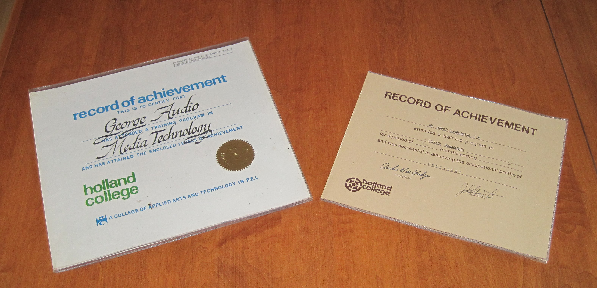
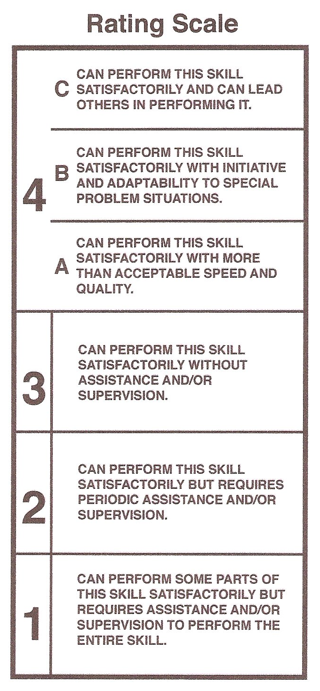
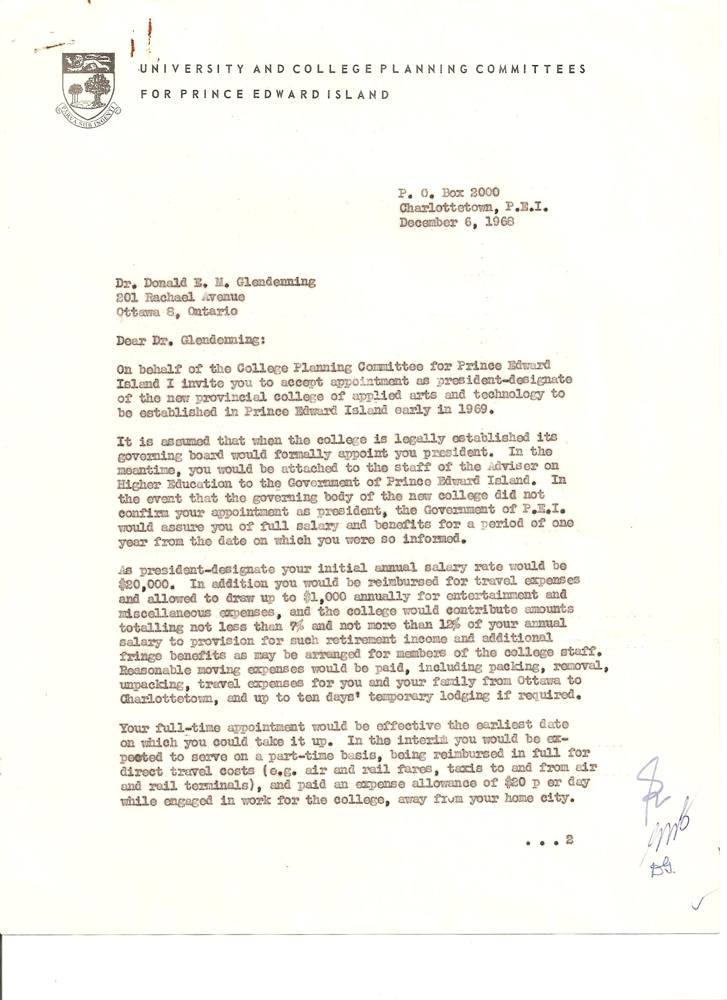
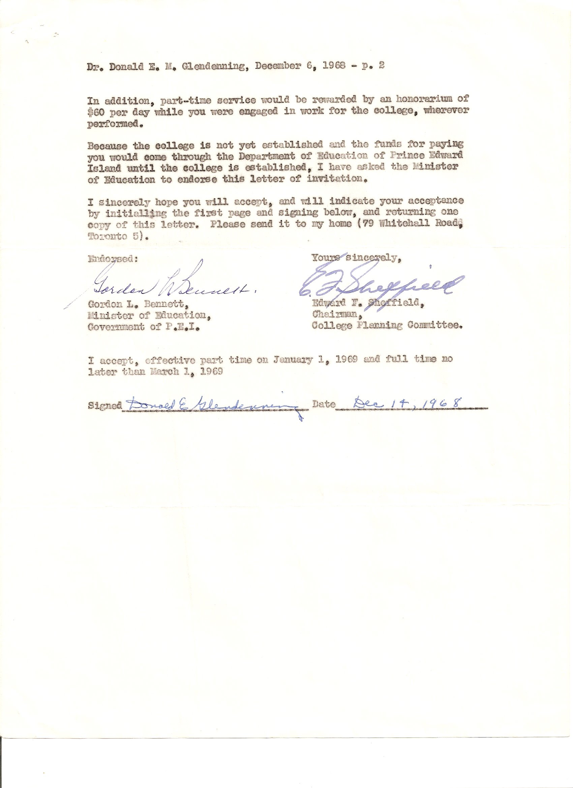
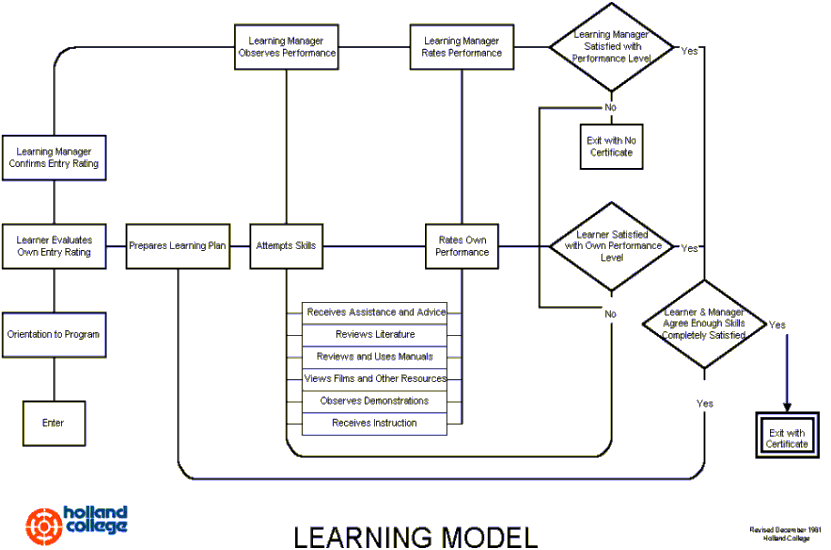
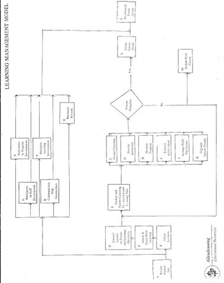
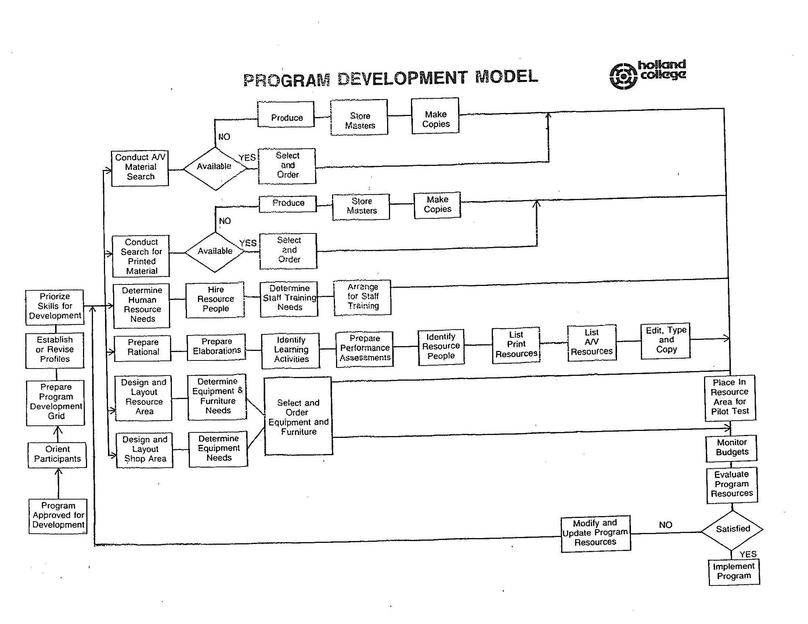

As I Remember:
Holland College:
Views and Vignettes
Donald E. M. Glendenning
Charlottetown, PEI
ISBN 978-0-9739752-2-2
2011
Testimonial
“I have been telling educators around the world that I view Holland College to be the prototype of what all higher education will become as we move towards the 21st century”
Malcolm S. Knowles
Professor Emeritus of Adult and
Community College Education
North Carolina State University
1977
Dedication
To
The Holland College Family,
The People Who Made It Happen
INTRODUCTION
I’ve resisted the temptation to write a book, especially a book about Holland College, although I have often entertained the idea and have been encouraged to do so by friends and colleagues alike. I’ve not done so for several reasons. First of all, doing justice to the subject would take a great deal of effort of a kind and at a level that I was not willing to expend. Secondly, while I believe my writing is clear and factual, that style does not translate into interesting reading. Thirdly, I was so intimately involved with the development of the College that, even with the best of intentions, my interpretations would likely neither be, nor appear to be, balanced. On top of that, a book about Holland College, and an excellent one at that, has now been published. So, instead, I’ve decided to recall some events, conditions, views and activities that were, in my view, of significance and may be of interest. The pages that follow are intended record things that happened rather than what did not happen, who caused it to happen or who prevented it from happening.
I consider Holland College to have been a success; it delivered to Islanders what the original planners intended. It offered relevant, high quality programs that prepared Islanders to enter the workforce at levels and in occupations consistent with the times; it delivered those programs through an instructional model that was leading edge, and it responded to individual and community needs with remarkable flexibility. Its time had come. It practiced new and fresh thinking in education and offered new educational opportunities to Islanders and Island organizations. I am both pleased and honoured to have been part of that story; I also believe that I contributed to its success. Being the first, however, leaves little shelter from decisions that were made.
The writing process caused and allowed me to think about the College in a new way.
On reflection, I find that we did many things that were different from our sister institutions. So I ask myself the question “What were the conditions that allowed that to happen?” From my analysis, I concluded that the framework for success started with the legislation; ours was unique among colleges. From my knowledge of community colleges, the Holland College Act provided College decision makers with greater freedom to act than did any other college legislation in Canada. Because of this, the College could use its energy to do the things it was established to do rather than expend the energy in working the system. Without that freedom, many of our ideas would likely not have come to fruition.
These recollections are organized as follows:
Backdrop speaks to some of the issues and events across the country in which I was involved and which impacted both Holland College and me.
Conditions for Success speaks to a number of issues that set the early direction of the College. Different decisions at that point in the College’ life probably would have resulted in quite a different College.
Beginnings recalls some firsts in the life of the College.
Operations recalls some operating matters that my have had a different twist either because we were new or because of our approach to instruction.
Vignettes recount some personal events and views
Some Personal Notes
Appendices include items that elaborate or demonstrate the text.
In preparing these notes, I am painfully aware of the contributions of so many to my, and our, success. First, I mention my wife, Carol, and children, Brian and Janet; they deserved more of my time than I gave.
Then there is the College Team. Individuals with interesting and diverse backgrounds came together for a common cause - to provide a quality education for the thousands of young men and women who needed, wanted and deserved quality training in preparation for work. Our team was loosely divided among groups of people in governance, instruction, administration and support. I was a go-between, messenger, communicator, flag-bearer and cheer leader. The team also included the many advisory and chart development committee members who, first of all, helped us identify what our students should be able to do on exit from the College, and later provided on-going advice about our programs. Last but far from least are the students who, for the most part, understood and took advantage of the dual challenge that of preparing for a career and assuming a large measure of responsibility for their own success.
Two early slogans seemed to capture the early attention of Islanders and provided direction to College members... The Island is our Campus forced us to think outside institutional walls and reminded us that, although initially located in Charlottetown, the College was established to serve all Islanders wherever they lived. A College in the Market Place forced and allowed us to offer, not only full time courses, but a wide variety of short courses, night classes and part time instruction in communities throughout the Island and at time convenient to learners. Two examples come quickly to mind. Before we even opened our doors to full-time students, advertisements were placed announcing the offering of night classes. Statistics will show a healthy part time enrolment most years. In 1986-87 for example, as appendix 6 shows, we served over 9,000 students with only 2,400 being considered full-time. A second bit of evidence was approval by the Board to allow us to offer any course or service consistent with our mandate provided that the costs would be covered by tuition or sponsorship. While this may seem common place today, it was not the norm among sister colleges in 1969.
Finally, I want to recognize the people of Prince Edward Island, directly and through their government, for encouragement and support. You may not have been sure exactly what was happening at Holland College, but it seemed to be working for your sons and daughters, and for the benefit of the community at large. And for this reason, you gave us your support.
The events recalled herein are drawn almost entirely from memory although I did check a few of the dates. I apologize for any errors; if I knew they were errors, I would have corrected them.
Don Glendenning
Charlottetown, PEI
February 2011
CONTENTS
Introduction 5
Contents 9
BACKDROP
Canada TVTA Act 11
Technicians - A New Breed 13
Comprehensive Development Plan 15
College Planning Committee 17
Canadian Vocational Association 19
Community Colleges 21
DACUM 23
CONDITIONS FOR SUCCESS
Autonomy 25
Clear Mandate 27
Governors not Delegates 29
Relevant Programs 31
Defined Delivery Models 33
Responsive Decision-making 35
BEGINNINGS
The First Office 37
Choosing a Name 39
Summerside or Charlottetown? 41
Tuition or Not? 43
Students from Away 45
Arrival of DACUM 47
STEP 49
Atlantic Police Academy 51
Earning the Name 53
Creativity Centre 55
Culinary Institute of Canada 57
CCIC 59
Holland College Foundation 61
International Activities 63
Leadership Institute 65
Warranty Program 67
OPERATIONS
Starting Early 69
The First Test 71
Day 1, Year 2 73
Staffing 75
Staff Development 77
Paying for the Job 79
Record of Achievement 81
Short Communication Lines 83
DEW Letters 85
Rating Scale 87
Advisory Committees 89
Assessing Student Performance 91
Student Complaints 93
College Costs 95
Defining Documents 97
Politics 99
Expanded Mandate 101
Blue Suitcase 103
College as a Destination 105
Public Relations 107
PLATO 109
School of Visual Arts 111
CAPRI 113
Survey of Adult Training Needs 115
Survey of Entry Level Skills 117
VIGNETTES
A Cabinet Experience 119
Our First Computer 121
A Religious Experience 123
A Pitch in Ontario 125
Charlottetown Hotel 127
Gifts to staff 129
College Dress 131
SOME PERSONAL NOTES
Opening Scene 133
East or West 135
A home on the Island 137
Books that made a difference 139
EPILOGUE 141
APPENDICES 143
Employment contract of President Designate
Learning Model
Learning Management Model
Program Development Model
Orientation Disks - 1970 and 1974
Enrolment Statistics, 1986-87
Biographical Notes
Program Charts
Electronics Technology
Executive and Administrative Assistant
Learning Management Chart
Orientation Disk (1970 and 1974)
Canada TVTA Act
During and immediately following WW2, Canada changed from an agrarian to an industrial nation. First came our wartime industries supported, in a large measure, by female workers. Following the war, industry focused on the pent up demand for domestic goods; women workers remained a continuing core, supplemented by returning veterans many of whom were given vocational training before returning to civilian life. To a large degree, however, our post war need for highly skilled labour was met through the migration of thousands of workers from Western Europe – workers who left a war ravaged continent and sought a new life in Canada. Many were highly skilled and held advanced certifications through the City and Guilds certification process in the United Kingdom and elsewhere.
By the late 1950’s, however, the industrial sector in Canada was confronted with major problems, an aging workforce, a declining supply of skilled workers from Western Europe, technological change and an education system ill prepared for the new realities. Urgent action was required. The country rose to the occasion with a massive and unprecedented expansion of facilities and programs, funded jointly by federal and provincial governments. During the decade of the sixties, Canada’s response was bold, innovative, substantial and successful.
Under the program, vocational and technical schools were constructed in every Province and new programs were added to existing schools, veterans training centres were upgraded and expanded offering a wide range of trade programs, and unemployed and underemployed were provided with opportunities to upgrade their basic education.
By the mid 1960’s a new component, perhaps better described as a new level, was added to the educational system in every Province, every Province that is, except Prince Edward Island. For the most part, separate new institutions, labeled Institutes of Technology, were created although some provinces added the technician component to their existing institutions. The institutions and programs initiated in the sixties became the nucleus of Canada’s community colleges as contrasted with the community colleges of our neighbour to the south where community colleges resulted from a desire to put university education within reach of more citizens.
Technicians were a new breed of worker having undertaken an intensive two year training program beyond high school graduation, with a more advanced technical, mathematics and science background than the skilled trade’s person – and more technical skills than university graduates. Technicians were soon joined by technologists from
Three-year programs, and Canada had a whole new level of skilled workers to support the emerging industries. In the early stages, technician training programs involved 1,200 hours of instruction per year; as a result, the two year programs in institutes of technology offered as many hours of instruction as did a typical four year program at university.
Against that backdrop, in Prince Edward Island during the latter parts of the 1960s, planners working on Comprehensive Development Plan, recommended major changes to the educational sector. Among other things, they recommended the establishment of post secondary programs as an alternative to university degrees. The Province struck a College Planning Committee to study the matter and to make recommendations to the Government. The Committee gathered information, visited institutions elsewhere and heard presentations from concerned citizens and groups and recommended a college of applied arts and technology to serve Prince Edward Island.
Technicians – A New Breed
Canada’s decision in the 1960’s to launch programs to train technicians and technologists through building new institutes of technology was bold and unique - and some might add, expensive. Technicians were needed to fill the gap between engineers and skilled workers; they were needed in other fields also but the focus at that time was on engineering and business. One can imagine any field of endeavour expanding with the gap between the professional and the skilled worker becoming wider and wider. Into this gap, came a wide range of people mostly with two or three years of training who became known as technicians and technologists.
Although there are older technical training institutes, in post-war Canada, Ryerson Institute of Technology was probably the most recognized institution operating at the technician and technologist level; many view Ryerson as the model for early institutes of technology although, by the time institutes of technology were established; Ryerson was positioning itself to become a technical university. Technicians in the United Kingdom received the designation after a long period of training and work experience, much like our apprenticeships; The City and Guilds of London certified technicians and technologists but was not itself a teaching institution.
A technician is trained in a fashion which permits the achievement of a high level of academic study as well as gaining a high level of technical skill in order to be employable without an extensive period of orientation after graduation. The degree of specialization however, cannot be so narrow that versatility will be unduly restricted in the light of rapidly changing technology; such programs must be well grounded in the basic disciplines of mathematics, science, and language.
In 1969, it was generally accepted that technicians must be able to:
Apply knowledge of science and mathematics extensively in rendering direct technical assistance to physical and/or biological scientists, engineers, or medical personnel engaged in scientific research and experimentation
Design, develop or plan modifications of new products, procedures, techniques, services, processes, or applications under the supervision of professional, scientific, engineering or medical personnel in applied research, design and development.
Plan, supervise, or assist in installation, and inspect complex apparatus, equipment and control systems.
Advise regarding the operation, maintenance and repair of complex apparatus and equipment with extensive control systems.
Plan production, operations or services as a member of the management unit responsible for efficient use of manpower, materials, money, and equipment or apparatus in mass production or routine technical or specialized personal service
Advise, plan and estimate costs as a field representative of a manufacturer or distributor of technical apparatus, equipment, services, and/or products
Be responsible for the performance of tests of mechanical, hydraulic, pneumatic, electrical, or electronic components or systems in the physical sciences; and/or determine, measure and make specialized preparations, tests, or analyses of substances in the physical, agricultural, biological, medical, of health related sciences; and prepare appropriate technical reports covering such tests
Prepare or interpret engineering drawings and sketches, or write detailed scientific specifications or procedures for work related to physical and/or biological sciences.
Select, compile and use technical information from such references as engineering standards; handbooks, biological, agricultural, or medical and health-related procedural outlines; and technical digests or research findings.
Analyze and interpret information obtained from precision measuring and recording instruments and/or special procedures, determinations and techniques, and make evaluations upon which technical decisions can be based.
Analyze and diagnose technical problems that involve independent decisions. Judgement requires substantive experience in the occupational field in addition to knowledge of scientific principles and technical know-how.
Deal with a variety of technical problems involving many factors and variables which require an understanding of several technical fields. This versatility is a characteristic that relates to breadth of scientific and technical understanding, the antithesis of narrow specialization.
Comprehensive Development Plan
During the 1950’s and early 1960’s, the Federal government introduced an alphabet soup of programs aimed at removing disparities between rural and urban youth. Such initiatives resulted in substantial federal grants for the planning process but little for actual programs. PEI was itself the subject of many surveys and studies and the recipient of such funds. One such program resulted in the establishment of NewStart Corporations throughout the country for the purpose of experimenting with new ways to prepare rural youth for transition into the changing community. The impact on Holland College of the Nova Scotia NewStart Corporation, is described elsewhere in this book.
Canadians in the postwar era took to the roads in large numbers; rising incomes and improving roads made travel easier and annual vacations were routine. PEI participated in the boom and tourist facilities and activities responded to the opportunity. Since then, tourism has moved into second place in the Island’s economy and is nibbling at the heels of agriculture for first place.
In PEI, although Agriculture was the number one industry, farmers struggled to make a living. Farms were small and farmers could not afford to mechanize. The same applied to fisheries. In both cases, incomes were often only at a subsistence level. Although programs of assistance were introduced, farmers appeared reluctant to participate. Early initiatives designed to expand secondary industries on the Island were often led by off-Island entrepreneurs; many failed.
The post war baby boom put on pressure for new school facilities resulting in a number of new high schools. One room schools provided instruction for most students in their early years. In 1969, PEI had 24 high schools and 57 elementary schools of three or more rooms; there also were 248 one or two room schools. Not surprising, there were more school trustees than there were teachers. Teachers had minimum standards with many holding temporary permits or licenses. School consolidation was happening elsewhere, and soon the pace would quicken on PEI
Postsecondary education, geared to obtaining a university degree, was provided by Prince of Wales College and St. Dunstan’s University. Attempts to rationalize the post secondary offerings met with stiff resistance. Consequently, the Premier published a white paper in April of 1968 declaring the establishment of a single university to serve PEI and creating a college of applied arts and technology.
In 1965, the Province entered into an agreement with Acres Research and Planning Limited of Toronto to undertake a comprehensive series of studies of the Island economy. To direct the studies, an Economic Improvement Corporation was established and staffed, primarily, by “outside” experts. Their efforts resulted in a Comprehensive Development Plan which included major interventions in the way things were done on PEI. In early 1969, that plan became the basis of an agreement between the federal and Provincial governments under which millions of dollars flowed to PEI resulting in changes in the life of most Islanders. The Plan addressed a number of issues in school consolidation in the public schools, the upgrading of administration and leadership, amalgamation of the two existing universities and the creation of a college of applied arts and technology.
College Planning Committee
On April 2, 1968, the Premier, Hon. Alex Campbell, issued a policy statement on Post Secondary Education; three weeks later Assent was given to establish a commission on Post Secondary Education. On July 20 a College Planning Committee (CPC) was created by Order-in- Council with the following membership:
Charles Campbell, Principal of Morrell School
Guy Fichaud, Canada Manpower
Richard Higgins, Economic Improvement corporation
Fred Hyndman, Hyndman Insurance
Bud McMurtry, Director if Vocational Education
Charles Moffatt, Charlottetown Board of Trade
Connie Cullen, a student at St. Dunstan’s University
Vimy Gregory, student at Prince of Wales college
Urbain LeBlanc, St Dunstan’s University
Glenn Palmer, Prince of Wales College
Jim Jefferys, Chief of vocational Education and Manpower Training
The CPC, chaired initially by Dr. E. F. Sheffield of the University of Toronto, set about gathering information on issues involved in creating a new institution, an institution at the post secondary level but offering programs of a practical or applied nature. Obviously those already in operation across Canada were a major source of information. At the end of February 1969, I arrived with my family on PEI and, shortly thereafter, replaced Dr. Sheffield as Chair of the College Planning Committee.
The Committee’s activities included:
Visiting a number of institutions including the British Columbia Institute of Technology, Vancouver City College, Southern Alberta Institute of Technology and the Manitoba Institute of Technology, Fanshawe College, Niagara College, Rochester Institute of Technology,
A search for and selection of a President-Designate
A public call for names for the new institution; about 30 names were submitted and “Holland” was chosen
Receiving briefs from individuals and organizations including: Women’s Institutes, St. Dunstan’s University Faculty Association, Association of Nurses of PEI, Home Economics Faculty of Prince of Wales College, PEI Branch of the Canadian Society of Radiological Technicians, Canadian Federation of University Women, City of Charlottetown and the Summerside Board of Trade,
Securing temporary space at 152 Kent Street
Recommending Charlottetown as the location for the College
Meeting to hear briefs, share information, discuss alternatives and ideas and generally maintain the impetus of the initiative.
Preparing a final report and recommendations to the incoming Board of Governors. (Interested readers will find a copy in the Holland College Archives)
Holland College was officially established by proclamation of Lt. Gov. W. J. MacDonald on April 23, 1968, the first Board appointed on June 11. On July 10, the first meeting of the Board was convened with Gordon Bennett, Minister of Education in the chair. Urbain Leblanc was named interim chair of the board. My appointment as President was ratified. By the next meeting, our board was up to full strength and Hesta MacDonald became our first elected chair.
Canadian Vocational Association
The Canadian Vocational Association came into being in 1960. It coincided with the enactment of the federal Technical and Vocational Training Assistance Act which heralded the beginning of a major initiative to provide skilled manpower for business and industry throughout Canada. Until then, our needs for skilled manpower had been met primarily through immigration from Western Europe. The federal-provincial initiative resulted in over one billion dollars for facilities and equipment and additional millions of dollars annually in support of operating costs; while it was aimed at adults, it also included a vocational high school component.
Senior federal, provincial and municipal officials responsible for implementing vocational programs met at national and regional held meetings to discuss the new programs but they also found themselves caucusing over breakfast at the American Vocational Association to exchange information and ideas about developments in Canada. Later, these officials decided to found their own association, the Canadian Vocational Association. Initial meetings were usually held in Ottawa as an add-on to federal-provincial gatherings but by the mid-nineteen sixties, the Association had launched national meetings and conferences on its own. My first CVA meeting, as I recall, was in Ottawa in the fall of 1962.
CVA played a very important role in Canada and an important role in shaping my knowledge and vision of education. Granted, its focus was on vocational education, but it was not a narrow focus. The definition espoused, and one I still hold, is of vocational education as that part of one’s education designed to prepare one to enter employment, to maintain employment and to advance in one’s employment. That definition certainly allows vocational educators considerable scope.
Members of the Association came from all levels of education, secondary, post secondary and private institutions; they were teachers, guidance counselors, trustees, government officials, university professors; they were employed by federal, provincial or municipal governments, educational associations or in private industry; every province and other countries were represented at national conferences as well as any subject that you could imagine.
As at any conference, while inspiration and information may have come from speakers, real learning also came through exchanges among delegates during coffee breaks, late night sessions in the room of a colleague, during a banquet or dance, or listening to an exchange between officials from federal and provincial governments or private industry. I found conferences exhilarating and usually required 2-3 days following a conference to sift through my notes.
During most of my working lifetime, I was very active in CVA first as a member, then in a variety of capacities on the Executive but also as a panelist and speaker at conferences, a workshop leader and general promoter. I was active because I believed strongly in what the Association stood for and, more important, for what it did – bringing together on a regular basis people from across the country to exchange information and views on vocational education. It also provided me with an opportunity to broaden my communication and leadership skills. Conference participants soon became friends thereby providing a network of expertise that I could access when needed - friends in every Province and at all levels of education, Even in retirement, I still consider them as friends and colleagues.
But I also benefited from the pan-Canadian gathering; I was contributing to this great country. I knew and felt at home with Canadians from every corner of the country. We were building the workforce together. It was visionary, exhilarating and very demanding. I am certainly richer for the experience. Through the years, I was also an active contributor to CVA through the CVA journal. This provided an opportunity to tell the Holland College story but more generally, I accepted the task of writing as a form of continuing education. I do not especially enjoy writing, although I do quite a bit of it. But writing both allowed and required me to voice my views and subject them to the scrutiny and criticism of others. Again it was a deliberate strategy to continue my education.
Many colleagues at Holland College were also active in CVA first through membership, later through conferences and workshops and then through leadership roles with the organization. But CVA conferences also provided an opportunity to have fun.
Mention should also be made of the establishment of the Association of Canadian Community Colleges (ACCC) in the early 1970s. Whereas CVA was member based and member oriented, ACCC members were institutions and activities focused on strengthening colleges and giving them a voice in the education sector – a task to which it brought great energy and success. The role of ACCC was different but equally important. My personal interests, that of education, I felt were better served by the Canadian Vocational Association.
Community Colleges
An earlier item described the provisions of the Canada TVT Act through which the Government of Canada provided substantial funding for a variety of training programs leading to employment, institutions and training programs were provincially owned and operated. The federal government simply shared in certain costs as identified in agreements with individual provinces. The initiative proved successful. During the period 1961-1967 alone, capital projects approved included major renovations and new 655 high schools, 39 new institutes of technology and 194 new adult training centres
Individual provincial responses varied.
The organizational response varied from Province to Province:
Atlantic Canada delivered their programs almost exclusively through multi-purpose institutions operated directly by the Province.
Quebec initially established a network of institutions operating separately from each other. Later these institutions were brought together under the CEGEP umbrella, the first year of university was added, and the whole became a level between secondary schools and universities.
Ontario, like Quebec, built a network of separate Institutes of Technology and vocational centers that were operated directly by the Province, and Adult educational upgrading centres sometimes free-standing and sometimes part of the local secondary system.
The Prairie provinces favoured provincial institutions similar in structure to those in Atlantic Canada
British Columbia built a new provincial Institute of Technology and also a dozen or so regional vocational schools.
By 1970 the institutions, adult education centres, institutes of technology and trade schools, came together under the community college umbrella, an arrangement still in place today.
DACUM
Vocational educators grew up with trade and job analysis as the basis of planning and developing vocational programs and, therefore, were sympathetic to outcomes based education. The arrival of DACUM, however, especially the approach to the identification and presentation pf competencies, provided educators with more sophisticated and affordable tools in their efforts to design competency and outcomes based programs to meet individual learner’s needs.
In the words of Robert Adams, the developer of the DACUM model,* (p 24)
"DACUM can be defined as a single-sheet skill profile that serves as both a curriculum plan and an evaluation instrument for occupational training programs.
It is graphic in nature, presenting definitions of the skills of an entire occupation on this single sheet of paper. This discourages treatment of any element of the occupation in isolation. Stated differently, it promotes treatment of any element as part of a larger whole.
It is an analysis of an occupation rather than a curriculum evolving from an analysis. The occupation is sub-divided into General Areas of Competence. Each is then analyzed to identify each skill perfoormed. The result is independent specification of each of the skills (behaviours) that collectively enable an individual to perform competently in the occupation. These skills are defined quite simply and are structured independently in small blocks on the chart. Each can serve as an independent goal for learning achievement.
Adams identified the characteristics of the DACUM model, with the analysis as the foundation, as (Adams p. 259)*:
Immediate feedback of results to the trainee.
Immediate analysis of program strengths and weaknesses.
Positive communication between instructor and trainee.
Self-evaluation by the learner.
Self-planning and goal setting.
An interesting, efficient, and practical, yet unstructured learning environment.
Onus for evaluation and qualification on the trainee.
Positive relationship between training evaluation and the type of evaluation normally made by employers.
Cumulative approach to achievement (the DACUM process will not allow negative or downward evaluation unless the trainee and instructor agree that a previous evaluation was in error.)
An entry measure which takes into consideration the trainee's previous training and experience and allows him to proceed from his own appropriate point of departure.
A DACUM chart contains a rating scale that accommodates evaluations of skill development achievement for each of the defined skills or behaviours. The chart also serves as a record keeping system, as all ratings of skills are recorded directly on a copy of the DACUM chart maintained for each trainee."
Can perform this task with more than acceptable speed and quality, with initiative and adaptability and can lead others in performing this task. |
6 |
Can perform this task with more than acceptable speed and quality and with initiative and adaptability to special problem situations. |
5 |
Can perform this task satisfactorily without supervision or assistance with more than acceptable speed and quality of work. |
4 |
Can perform this task satisfactorily without assistance and/or supervision. |
3 |
Can perform this task satisfactorily but requires periodic supervision and/or assistance. |
2 |
Can perform this task, but not without constant supervision and some assistance. |
1 |
Cannot perform this task satisfactorily for participation in a work environment. |
0 |
The DACUM analysis differs from conventional approaches in a number of ways: (Adams pp. 43 - 44)*
Only observable behaviour is identified.
Skills are stated within the context of the DACUM rating scale.
The analysis is conducted by the industry or other eventual users of the training product,
... skill definitions encompass more activity than the typical teacher-specified skill definitions.
The analysis is conducted by means of a dynamic group activity.
The analysis results in a format that is directly applicable as a curriculum.
A benchmark or reference point is also necessary and should reflect a standard in the occupation for which the learner is preparing. For example, a plumber performing at a three level should be able to come to your home and fix any normal plumbing problem without having to phone back to the office for advice. Other ratings are determined based on the benchmark.
*Adams, Robert E, DACUM Approach to Curriculum Learning and Evaluation in Occupational Training. Ottawa: Department of Regional Economic Expansion, 1975.
Autonomy
While self-governance was a hallmark of universities, other levels of education were deemed to be better served by being creatures of provincial governments. In 1969, sister institutions in Atlantic Canada, and in most Provinces except for Ontario, were operated by Provincial governments. Most staff were public servants, hiring was handled by Public Service Commissions, governments provided administrative, accounting and purchasing services; buildings were the property of the government, snow removal and parking lots were all provided to colleges by provincial governments but were not on college books. Approvals generally had to be obtained through provincial government bureaucracies.
Programming, for the most part, was driven by funding available under the Federal Technical and Vocational Training Assistance Act. Institutions in Atlantic Canada offered both trade and technical training mostly in the fields of business and technology, Quebec Colleges provided a level of education between high school and university that included both university preparation and technical training; Ontario had just amalgamated trade schools and institutes of technology into community colleges, the Western Provinces tended towards one or two institutes of technology in each Province supplemented by a number of trade schools. .
The Holland College Planning Committee debated the issue of governance at some length. During that period, I had occasion to put the issue to Fred Jorgenson, President of the Southern Alberta Institute of Technology; his response was that reporting directly to government was not a problem provided the Principal/president of the institution reported at a senior enough level. In his case, he and his counterpart at the Northern Alberta Institute of Technology, reported to a Deputy Minister. But I remember Ralph MacLean, Principal of the Nova Scotia Institute of Technology, saying that initially he reported to the Deputy Minister of Education but over the years other levels of senior bureaucrats were inserted into the chain. A long chain of command slows down decision-making. While I was not uncomfortable with either model, I was somewhat knowledgeable about the governance models of sister institutions in Atlantic Canada; based on my knowledge, I certainly leaned increasingly towards a “free standing “model.
The College Planning Committee recommended on a “free-standing” institution and opted for a unicameral governing structure, that is a single governing structure rather than the more usual Board and Senate. We cherry-picked from founding documents of other colleges including, as I recall Ryerson Polytechnic, “Basic Documents” of the community college system in Ontario and Oakland College in Michigan. A draft* was prepared and submitted to the PEI Government and after revising to reflect appropriate legal wording, the governing structure was approved relatively unchanged. .
The board of the new college was made up of sixteen members, two students elected by the student body, two faculty elected by the faculty, three members representative of but not representing, the community and four additional member selected by government from lists provided by the College. In practice, the College put forward two names for each vacancy.
The Board had a number of standing committees including student services, finance, staffing and program who brought recommendations to the Board for approval.
In effect, the Board of Governors of Holland College had authority to, and did,
Determine programs to be offered, expanded, modified and terminated without external approval.
Hire staff, establish pay and benefit schemes, determine staff qualifications, and all other conditions of employment. .
Offer any self-supporting program or training activity without external approval. The policy was approved initially to allow the College to offer self-supporting short courses and night classes. Later it was interpreted to include the offering of any course or service.
Rent or lease space as required
In comparison:
The Principal of New Brunswick Community College in Moncton had to obtain approval from Fredericton to visit Holland College and be reimbursed for his travel.
In order to offer self-supporting short or night courses, colleges in New Brunswick required Treasury board approval. Treasury Board had to authorize an increase in funds; the College collected and deposited funds into general operating revenue. Profit, if any, accrued to the Province rather than to the Institute where they could have been used to offset losses in other offerings.
In my view, the decision to be a free-standing institution was a good one; any other would have provided neither the same flexibility nor accountability. Freedom to act allows an institution to be successful but it does not guarantee it. That freedom, however, left the Board and the President with few places to hide. A decision been to locate the college within the Provincial Government, would, I am sure, have resulted in quite a different institution.
The Holland College Act gave more freedom to act the College than any other college in Canada. I have been asked as to how this came about. The following excerpt may provide some insight.
*On November 6, 2009 I reviewed “A REPORT TO THE MINISTER OF EDUCATION AND THE GOVERNMENT OF PRINCE EDWARD ISLAND” presented by the College Planning Committee on April 2, 1969. Page 7 of the report includes the following:
“(1) Charter: This subcommittee recommended, and the whole committee concurred, that the new provincial college should be incorporated. It then drafted a charter, which was approved by the whole committee, for presentation to the Minister of Education and the Legislative Assembly.”
A Clear Mandate
The Premier’s White paper of 1968 spoke of the need for education at the post secondary level as an alternative to university. Further definition was left to the College Planning Committee and, later, to the Board. As part of the process, the Committee gathered information, invited presentations from interested individuals and groups and visited institutions elsewhere in Canada. Part of their investigation included interviews with candidates for the role of President-Designate. In early November, 1968, I was invited to PEI for an interview.
During my week in PEI, I met a number of people including the Premier and Minister of Education, officials of the Department of Education, people who had presented papers to the Planning committee and members of the Planning Committee itself. Post high school programs in business and technology were certainly seen as central to the offerings but there was also a strong view that the new institution should offer the first year of university, similar, in some ways, to the Quebec model. There was also a strong view in some quarters that there was a need for a program designed specifically for medical laboratory technology students to replace the traditional entrance requirement of the first year of university. .
On a Thursday evening I was interviewed by the full College Planning Committee in Room No. 1 at the Kirkwood Motel. Toward the end of the interview, I was asked, as I recall by Fred Hyndman, “what is the first thing you would do if appointed President?” Being aware that a shared or common vision would be important and that it still did not exist within the College Planning Committee, I answered that “I would prepare a paper for the Board’s consideration as to the role of the proposed College”. Later the CPC invited me to assume the leadership role of the new College and, sometime during March and April 1969 I drafted a paper outlining, among other things, the services to be offered. Those services were:
1. Programs in business, technology, and applied arts leading to employment at the "semi-professional or technician level. This category comprises a range of two and three year courses normally found in institutes of technology or colleges of applied arts and technology. Emphasis during the program is on an understanding of the principles of science, mathematics and technology and their application to business and industry. Successful completion of these programs will lead to a Diploma of Technology or a Diploma of Applied Arts.
2. The first year(s) of Diploma programs which can be completed at institutions, similar to the College, located in neighbouring provinces. It is conceivable that numbers and costs of some programs will necessitate a co-operative training arrangement with sister institutions In some of the technologies, the first one or two years may be given by Holland College with the remainder taken elsewhere.
3. Other Courses leading to employment. There is a wide range of occupations for which adequate preparation can be gained during a one-year preparatory course. The College will offer such courses when they are needed by the community and are not available elsewhere. Some of these courses may not demand high school completion as an entrance requirement. Included in this group are such courses as stenography, retail selling, business equipment servicing, practical nursing, and business management options such as farm management, retailing, marketing, accounting, and resort operation.
4. . . . Preparatory or qualifying courses for mature adults who require a subject, or subjects, in order to meet entrance requirements. The normal requirements for College entrance is high school completion. Specific entrance requirements will vary from program to program and may require testing of applicants by the College. Young people of high school age, who desire entrance to the College but who do not have high school completion will be encouraged to complete their high school program. If numbers warrant, a pre-entry summer program for high school graduates may be organized to help them meet entrance requirements.
Many adults, who, for a variety of reasons, desire entrance to the College will be helped to meet entrance requirements through a program of individualized instruction, provided it seems likely that they can complete this program in less than one year. Instruction may be through correspondence, formal classes, programmed materials, or a combination of these as required to meet individual needs.
5. Continuing education and personal development. While the major emphasis will be on courses, programs and services with an occupational objective, the College will also pro vide opportunities for general continuing education and personal development.
6. Short, ad hoc courses, seminars, conferences, institutes and demonstrations related to community business and industrial needs. Employers and employees need opportunities to confront and be confronted with technical advances in their fields of interest. They need also, opportunities to learn new techniques and approaches to the management side of their business operation. This will be an important and active part of the College service to the Community.
7. Technical Information Centre. A cadre of technically competent staff, together with an organized information retrieval service, will be made available to business and industry on Prince Edward Island. It is to be hoped that employers and employees will see Holland College as a centre to which they can turn for technical advice.
The board approved the paper at its meeting on May 1, 1969 and, as far as I was concerned, we could now move on to the implementation stage.
Governors Not Delegates
The Holland College Planning committee was made up of 8 members broadly representative of Island life; the College Board had 12. Of the twelve, two members of staff and two student members were elected by their peers. In general and over the years most sectors and localities were represented and generally there was a good mix of men and women. The system worked well.
Roberts Rules of Order were adopted and there was a high degree of consensus in the decision making process. To my recollection, only twice were special rules were put in place prior to discussion and voting; once to choose Charlottetown over Summerside as the location and another when dealing with a problem of student discipline. The Board normally met once a month and concluded its business generally in a couple of hours.
I was, and still am, of the view that a Governing Board should reflect the constituency served but external agencies should not elect or otherwise select and send representatives. Individual members should bring their knowledge and judgment to each issue but not be messengers for any point of view. Fortunately our legal framework supported that approach. On occasion, it would be suggested that we ask an organization to name someone to our board but such names, when they were received, simply became a recommendation and nothing further. This reflected my own view but it was not something on which I had a predetermined and defined position.
Elsewhere I told about an interview for the presidency of a new college in the west. My recollection is that the board members of that College were actually selected by certain external organizations including school districts. From my brief exposure to that system, I felt it had the potential for dissension based on jurisdiction and felt during my interview process that some evidence of this already existed. With such an arrangement, it seemed to me that on occasion board members would feel compelled to vote on instruction from their constituency rather than vote for the good of the cause.
In my eighteen years of service, only once do I recall a Board Member taking the position that he/she could not or would not vote on an issue without returning to a constituency for advice or direction; other members were ready to cast a vote. There was no precedent. At that meeting, I was sitting beside the Chairman and leaned over and suggested that we take a brief recess; the Chair agreed and a recess was called.
The Chair and I had a brief discussion about the event and the options; my view is that we should proceed to a vote. The chair agreed; the board reconvened; a vote was called and taken; the motion passed – and that was the last meeting attended by the Board member who provoked the incident.
It is obvious that partisan politics prevails in all communities and PEI is no exception but it was a game I determined not to play; it is likely that, inadvertently, I played into the hands of one party or the other but none of it was planned. The closest I came to knowingly making a partisan political decision was to delay the termination of an employee for a few weeks until after the announced election - and that was of my own volition. At the same time, I am not so naive to realize that others likely made partisan political decisions. One only had to look at the composition of a department to realize that on occasion the majority of members shared support for one party or the other. In terms of interference by politicians, yes there was some but all done discreetly. My standard answer to a political query was I’ll look into it – and I always did and reported back. Never in my 18 years did we change a decision because of political interference.
Only once do I recall Government of the day asking for something not acceptable to Holland College Board. The particular instance followed discussion in the legislature about salaries paid to staff of UPEI, Holland College and the public school system. Following discussion at a regular Board meeting, our Chair, Don Livingston sought a meeting of the Minister explaining why we were not prepared to provide the requested information; the government of the day changed the legislation so that we had no option.
Relevant Programs
Holland College deliberately opted to design, implement and maintain relevant programs. It accomplished this in three ways, through course content, technologically qualified staff and ongoing liaison with the employment community.
Students enrolled in Holland College to learn work-entry skills, both technical and personal. Disciplines were not a very useful place to start. Where better to find the appropriate content, the College thought, than to ask the people who work in the field and perform these skills on a regular basis. The search of the disciplines came later. Textbooks support instruction they should not determine it. Furthermore, most textbooks are designed for information retrieval rather than the support of learning.
In our search, we discovered a new and innovative Canadian approach, the DACUM model that would become the foundation of our approach and could deliver what we needed at a price we could afford. The approach involved convening a small group of persons, representative of the field, and engaging them in a rigorous analysis of the work they performed and supervised. The result was a single page listing of skills to be used as a basis for program development, learning plans, tracking of student progress and as a record of lifelong learning.
Instructors were drawn from the fields for which students were preparing; selection criteria included:
General education
Advanced or formal in their teaching specialty
recent and relevant work experience
personal suitability
Following the adoption of the Self Training and Evaluation Process (STEP) model, it soon became evident that supervisory experience would have been an important asset for instructors and should have been one of the criteria from day one; having a degree was a bonus not a requirement.
Relevance of career programs is difficult to maintain; the workplace changes but training institutions become rigid and quickly outdated. Holland College dealt with the issue as well as most colleges and, perhaps, better than many through:
Each program underwent a major review and revision of the DACUM analysis at least every three years. This brought fresh input by practitioners as to the changing nature of the occupation or field.
An annual review of learning guides, assignments, projects, references, etc.
Regular meetings of program advisory committees. As I recall, we had over 400 practitioners serving as advisory committee members. Each program advisory committee met at least once per year to review the program, placement, learning resources and learning activities of the program.
Although we encouraged staff to keep up to date, we did not have a fully functioning system to support the view, and there was little opportunity or financial incentive to update.
Each program required students to participate in a period of on-job-training.
Defined Delivery Models
Holland College was the only learning institution of its time, and perhaps even yet, that developed, published, implemented and monitored its delivery models; the College did not leave delivery to chance. Models included:
A learning model that clearly set out in chart form the steps and interactions of the teaching-learning process from a learner’s perspective. The model showed a learner’s path from the moment of acceptance into a program or course until the moment of exit either through having reached a learning goal or having taken a decision to withdraw. (Appendix 1)
A Learning Management Model that clearly set out the role of a learning manager (teacher) from the moment a learner was accepted into a program until he/she left the program. (Appendix 2)
A program development model designed to ensure that appropriate learning activities, learning materials, learning equipment and other learning resources were available to the learner, and to the teacher, in support of and at different levels depending on the objective of the learner. (Appendix 3)
Competency based analyses that became the basis of the curriculum and working agreement between a learner and instructor. As examples, two charts are attached, Early Childhood Education (Appendix 4) and Learning Manager (Appendix 5)
A Program Development Grid. that identified learning resources required for each competency.
Responsive Decision-making
As part of a course on higher education in the early 1960’s at Indiana University, I had presented a paper on how I would organize a university; it was the only thing I remember from the course. As I recall, I proposed a relatively flat structure not unlike that which we followed at Holland a decade or so later. I also recall a period of my life when I often scanned the advertisements in the Globe and Mail and was intrigued with role descriptions of senior managers.
My interview for a presidency of a college in British Columbia provided a reason and an opportunity to think even more about the subject; my appointment as President-designate of Holland College moved the issue from the realm of the possible to that of the actual. My teaching and administrative experience taught me that organizations have a way of taking on a life of their own, so we deemed it important to move thoughtfully about setting up a governing and operating structure. We were fortunate also, in that the College started small and we would have an opportunity to grow an organizational structure along with the organization.
My rules of thumb, although not ever recorded, were that an organization should:
Have minimum bureaucracy
Be as flat as we could get away with
Involve stakeholders to the extent possible
Maximize personal accountability
Maximum sharing of information about college operations
Minimize committee decision making.
Universities, like churches, usually have two major decision-making bodies, a Board of Governors and a senate. The College Planning Committee recommended and the Government approved a unicameral governing structure which was a single level, a Board of Governors, with responsibility for both administrative and program matters. The decision-making structure had the following components:
A Board of Governors with ultimate responsibility for all aspects of the College; the board included two representatives elected by the faculty and two by students. The board authorized a number of committees including program, personnel, finance and student affairs all of which considered matters assigned to them and made recommendations back to the board. In addition, the Board struck an appeals committee with power to hear appeals and render a decision.
A President to whom the day to day responsibility was delegated.
Reporting to the President were a number of Chairman and Directors who coordinated and directed the work of a number of teachers working as part of a cluster; chairs also taught. Also reporting to the President were two support divisions, one to provide instructional support and the other to provide administrative and financial services.
Committees were consultative rather than decision-makers.
Instructors who, having considered the views of advisory committees, made the actual decisions.
The First Office
I arrived on PEI with my family at the end of February 1969 and, after a few days of settling in, began to focus on the new College. I consider March 10, 1969 as the day I went on the payroll. At first, the Minister of Education, Gordon Bennett, provided an office on the third floor of what is now the Shaw building. Although I did not need much secretarial help in the early days, Gordon kindly allowed me to use secretarial assistance as needed; and that, as I recall is where I first met Mary Carter who later came to work at the College. We began a search for office space of our own; instructional space was not yet on our agenda. At that time, students were not expected until 1970.
Shortly after my appointment was announced and while I was still in Ottawa, Ron Atkinson, a local businessman, wrote congratulating me and indicating that Douglas Bros and Jones had space available for rent should we need it in the D.B and J building on Kent St. After a review of available space, however, we settled on two rooms, as I recall a total space of 278 square feet, on the second floor of 152 Kent Street.
Things moved quickly. On March 10 the name was chosen, at the same time, I was named President-Designate. Three days later we rented space; a month later Margaret Bell assumed secretarial duties. We were in business. I am not sure just how the early bills got paid, except that I know that they were paid by the Economic Improvement Corporation. I assume that they also provided furniture and paid the rent; financial arrangements were likely authorized by the Economic Improvement Corporation.
Margaret and I moved to the “new “location. Later that spring, Bud McMurtry became our Planning coordinator and he moved in also. He was soon followed by Cdr. E. T. Jefferies, our Administrative Officer. Vimy Gregory and Connie Cullen were hired as summer students. We worked out of each other’s pockets. Add to that our desks, chairs, copiers and filing cabinets, it was fully utilized space.
Then one day, an enquiry came from Professor R.J. Baker, the newly appointed President of UPEI, wondering if he could have some mail delivered to our office and perhaps a corner for an occasional work space. Ron was still in England and did not want to make the actual decision as to which campus to establish his office until after he was on site. Our answer was yes, of course there was space. We welcomed Ron but he did not spend much time at our location.
With the promise of funding for a September start, came the need to find instructional space. Would it be PVI?, Prince of Wales College? St. Dunstan’s University? All were possibilities but our search included rented facilities as well. Of the private spaces, the only one I recall was a potato storage warehouse owned by Austin Scales and located at the corner of Water and Great George Streets.
Although UPEI operated classes on both the PWC and SDU campuses for the first year, it was taken for granted that one or the other would become their full time home. I did not enter the debate, however, a “college on the hill” did not fit my vision of a community college; a college in the market place was a more apt description. Whatever the outcome, we would make it work. The larger issue was whether the College should locate in Summerside or Charlottetown but that is dealt with elsewhere.
During the 1969 school year, we operated from the vocational wing of Prince of Wales College. By the summer of 1970, UPEI had chosen St. Dunstan’s University as its location and the PWC became our first campus. Given our desire to put a College learning centre within easy driving distance of every learner, it was not long before we were offering courses in space rented from the Presbyterian Church in Summerside- and eventually in a number of other communities throughout the Island.
My focus was on programs not facilities, and I was quite comfortable in occupying suitable instructional space wherever it could be found.
Choosing a Name
On January 13, 1969, I replaced Dr. Dr. E. F. Sheffield, the advisor on higher education to the Government of Prince Edward Island, as chair of the College Planning Committee and, while the CPC continued to hear briefs and gather information, attention turned to drafting legislation and giving the proposed institution a name.
Most of the community colleges in Canada started out as trade schools, institutes of technology or some combination thereof. In the mid-1960’s, Ontario clustered components under the term Colleges of Applied Arts and Technology. Institutes of Technology were for the most part, operated as arms of provinces; colleges operated under boards of governors. Both possibilities were on the table when I arrived on the scene but whatever the decision as to structure, the institution needed a name. Certainly Institutes of Technology had a compelling ring and British Columbia Institute of Technology, Northern and Southern Alberta Institutes of Technology, Ryerson Institute, to name a few were prominent across the country. Certainly “institute and college” were both on the CPC table with strong support for each.
The college planning process had been a very open one, public meetings had been held and many briefs had been presented, public participation in determining a name was a natural extension of the process.
The question of a name was placed on the agenda of the CPC for its meeting in Summerside on March 10, 1969. As I recall, about thirty names had been suggested with three proposing the name of Captain Samuel Holland - a name unknown to me at the time. Suggestions had come from MacDonald, a student at the Prince County Vocational High School, Dorothy Cullen, the Provincial Librarian and Doug Boylan, Clerk to the Executive Council.
There was considerable discussion but I do not recall other names on the short list except for the name Abegweit. (I found out later that Dr. Sheffield favoured Abegweit because, he said, on any list of colleges, Abegweit would likely be first.) Just before the vote was taken, each member was asked for final comments with the last, as I recall, being Fred Hyndman who made a reasoned and strong case for choosing Holland; a vote was called and Holland was chosen.
By then, consensus had gelled around the new institution being a college rather than an institute. I distinctly recall, however, the chuckles around the table resulting, I think, from Vimy Gregory’s remark about memorabilia and student jackets bearing the initials of the Samuel Holland Institute of Technology.
Summerside or Charlottetown?
It was in early December 1968, as I recall, when I was offered, and accepted the position of President-Designate of the yet to be named College. It was also in December that Carol and I, contract in hand, traveled by train to Charlottetown to find a place to live; it was an arduous trip because of winter storms along the way. The range of available housing was not great and, given the tenuous nature of my contract, we did not want to buy beyond our means. We found a place still under construction at 6 Johnson Avenue, negotiated a price including some changes in design and materials, and returned to Ottawa by plane. At the end of February we moved to PEI and occupied our new home.
Although the official start for the new institution was planned for the fall of 1970, between the announcement of my appointment and my arrival, Bud MacMurtry, Director of Vocational Education and Apprenticeship and I talked about the possibility of starting in September 1969 with the transfer of three existing post secondary programs, Commercial Design and Electronics offered at the provincial Vocational Institute and Secretarial Arts then offered by Prince of Wales College. By March, planning for the new College began in earnest in the expectation that classes would commence that fall although funding for an early beginning was not confirmed until late June. By May we had both a name and legislation to make the College a reality.
Then the question of location came to the fore. Should Holland College be located in Charlottetown or should it be established in Summerside? Summerside made a case, and a strong one indeed that since the new university was in Charlottetown the new college should be located in Summerside. People, who know Summerside, know that the folk there can be persuasive. Location of Holland College became quite a contentious issue between the two cities.
Late one day I received an invitation from a prominent Summerside resident to tour that city. I was picked up, taken to Summerside, various locations were pointed out and information supporting Summerside as a site was proffered. It was persuasive, but I would not be the decision maker.
In May or June, as I recall, a public meeting was held in Summerside to show support of the area in having Holland College in its midst. Because of illness, I did not attend but Connie Cullen and Vimy Gregory, both College Planning Members, did. A thousand people turned out for the meeting; Elmer Murphy, then Editor of the Journal Pioneer, said later that, in his lifetime, the location of Holland College was the single issue that united the people of Summerside.
After a long silence, Charlottetown also showed an interest in hosting the new institution. The Mayor, Dorothy Corrigan, requested an opportunity to meet the Board; her request was granted and she presented the city’s case. I understand that the Mayor’s presentation came about as a result of some urging by at least one member of the Holland College Board.
The Board of Governors was much aware of the need for a decision on location but, not surprisingly, was not of one mind. Views differed but were not in a personally contentious way. With agreement to commence classes in September, some public information was needed as to location of classes. In August, the Board agreed to the erection of a sign on the Prince of Wales College lawn on Kent Street. The sign, I think, referred to it as the temporary location. Seems to me that the media reported the event and there was a photo in the paper.
The question of location arose frequently and a board Committee gathered information including criteria to be used in making the discussion. A decision was made in favour of Charlottetown. At the next meeting, the issue came back for further discussion; some members felt that insufficient notice had been given and the subject was sufficiently significant that “location” should be the only item on the agenda of an upcoming meeting.
Finally, in late November of 1969, a special meeting of the Board was called for the sole purpose of settling the question of site, ground rules were set including that the vote would be an open one, the Chair should vote as a board member and not be a tiebreaker and the vote would be set for 9:00 pm. A motion to locate the College in Charlottetown was duly moved and seconded, the Board convened as a committee of the whole and discussion began.
At the agreed upon time the Board reconvened, a vote was taken; Charlottetown was chosen. Later the results were transmitted to the PEI Government and the Board’s recommendation was accepted.
I did not take an active role in the discussion although I certainly expressed my views. Briefly stated my view was that Holland College would be a commuter college, therefore, it was incumbent on us to place the College within easy commute of as many potential students as possible. Later I translated this thinking into the view that there should be a College learning centre within a half-hour’s drive of every Islander. All programs could not be offered in each location but there should be a learning centre including meeting space, resource people and materials.
Tuition or Not?
From the beginning, Holland College charged tuition; that was the case in some community colleges elsewhere but certainly not in Atlantic Canada. The issue sparked healthy debate and reflected one’s view as to whether colleges were a part of the public school system or separate entities... The College opted for the latter model and tuition of $200 was set for all postsecondary programs. A related issue was our ability to offer self supporting courses and programs. I was given that authority very soon after the College was established. Most sister institutions in the Region, perhaps all, did not have that luxury.
In New Brunswick, for example, if an institution wanted to offer a night class or short course, approval was required from Fredericton and a request for funds presented to Treasury Board also located in Fredericton. As I understand it, Treasury Board had to raise a requisition for the funds meaning it had to give approval to increase the institutions operating budget. With approval in hand, the institution could proceed to advertise the course, hire an instructor and secure materials and supplies. Money was collected from the student or sponsor, receipts were issued, funds forwarded to Fredericton and deposited as a part of general Provincial revenue If the course was more popular than expected, additional revenue could not be retained to purchase other supplies or to offset the expense of offering a less popular course. Even if the process worked smoothly, there was much paper work and too much time consumed doing paperwork; the process did not encourage short courses.
The first test of the College decision was our night school offerings during the fall of 1969-70. The College offered a number of courses, all were well subscribed and paid for through tuition. The test went smoothly, administration was handled by College personnel and the courses did not cost the taxpayer a penny. But the big test was yet to come.
Elsewhere I recalled the founding of the Culinary Institute of Canada; its founding brought to the fore one of my weaknesses, that of fund raising. Culinary training was consistent with our mandate, was needed in a Province where tourism was so important economically and it had the support of leaders in the local tourism industry. Thanks, in large part to Garth Staples, then Deputy Minister of Tourism, some capital money was committed. What were the options for program operation?
Options included: not to offer the program, terminate or scale back other programs and use the funds for culinary programs, seek additional funding through the Maritime Provinces Higher Education Commission or make it a self supporting program. My recollection is that we included culinary training as part of the MPHEC grant request but I was not optimistic so we moved forward on the self-funding option.
.
Cost per student per year at Holland College probably averaged $5-6,000 at the time of the opening of the Culinary Institute. We decided to set tuition at $7,000 per year, and it was a two year program; we considered 10-12 students to be an opening minimum. I am sure that colleagues in Holland College and elsewhere thought we were crazy. How could we justify charging full tuition for one program and not for others? Fortunately, the Board supported the move and tuition of $7,000 was set.
We advertised for students – and waited with some trepidation. A few applications trickled in. Perhaps some scholarships would give enrolment a boost. In order to give it impetus, we granted each accepted applicant a $3,000 scholarship. In effect, we cut the tuition by $3,000 but doing so through awarding scholarships rather than reducing tuition. That move gained the program some publicity. We met our minimum target and the Culinary Institute of Canada began operation.
While the Institute was nominally self supporting, I know and approved the provision of many overhead services without charge.
Students from Away
Readers may recall that our original plan (See a clear Mandate) was silent on the matter of regional programs. Movement in that direction resulted from a number of individual decisions.
Elsewhere, I described the founding of the Atlantic Police Academy which developed initially out of a perceived need and opportunity – a need for trained police officers in the Province, Atlantic region and Canada and an opportunity for employment for Islanders if they were trained. In 1970, Bud McMurtry, Program Planning Officer, set about gathering information about the need, especially in the Maritimes. His explorations included, as I recall, police chiefs in all three provinces, Port security officials in St. John, New Brunswick, correctional officers and staff of the Attorney’ General Departments. The process both identified and generated an increased interest in the availability of such training if offered by PEI. While discussions were taking place, we registered the name, perhaps several names, and negotiated a cost sharing agreement making it a truly regional program. That story is told elsewhere.
I also recall a meeting, I believe in New Brunswick, about marine training (New Brunswick did not have a program at that time) attended by Jim Jefferys on behalf of the College, at which Jim raised the notion of a regional training program. The idea did not find favour. All Provinces were in favour of regional training programs provided that they were headquartered in their Province.
Other than the Atlantic Police Academy, the real impetus for Regional training came, as I recall, through the dental assistant program. During the first years of the program, enrolment was limited to Island students only but the PEI market was limited and soon not able to absorb all the graduates. Some graduates sought and found employment in New Brunswick (there was no training of dental assistants in New Brunswick at that time).and dentists there were interested in hiring more. Shortly after, we invited members of the New Brunswick dental profession to sit as members of our advisory committee.
New Brunswick dentists were interested in an ongoing arrangement, and the College was interested in expanding our program to serve that market. This was not an issue as long as our students were Islanders. To what extent, however, should PEI dollars be used to train students from other Provinces?
Following some discussion, the Holland College Board established a policy allowing the College to accept students from off-Island. Later the policy was broadened to allow for up to 10 percent of our enrollment to be from off Island not including the Atlantic Police Academy since its operating costs were already cost-shared. This allowed us to accommodate students in any program some of which were not available elsewhere in the Region.
Arrival of DACUM
My introduction to occupational analysis occurred during the period 1949 to 1951 while enrolled in the vocational teacher training program at the New Brunswick Technical Institute in Moncton. Later I learned about the Russian system, Swedish Sloyd, Ericson, Mager and others. During my work with the training Branch of the Department of Labour in Ottawa, I became involved in the preparation of occupational analyses, and later functional analyses, that were used as the basis for apprenticeship training across the country. In fact, Canada was a recognized leader in its innovative response to training for employment and its analyses activities. In addition, the Training Branch played an early role in encouraging research and innovation across the country in the delivery of technical and vocational programs.
As a staff development specialist with the Training Branch in Ottawa, I had an opportunity to learn about programmed learning, or programmed instruction, which was quite a fad in the early 1960s. Programmed learning forced one to focus on outcomes and design learning activities to lead a learner to the desired outcome. Given this background and the fact that Holland College would focus on career training, it is not surprising that I viewed occupational analysis a key component to planning and delivering relevant programs.
Having taught teachers, I also had developed a personal interest, and hopefully some expertise, in both curriculum development and teaching methodology. For a number of years, I had put my knowledge into practice in the teaching of industrial arts and vocational teachers at the New Brunswick Technical Institute and later through the delivery of short and summer courses elsewhere in Canada. This knowledge and experience was enlarged through my role as a Teacher training specialist while with the Training Branch of the Federal Department of labour and later the Department of Manpower and Immigration.
While still in Ottawa, I was aware of the establishment of a number of research initiatives in the field of adult education funded by the Federal government. These led to NewStart Corporations being established across the country each focused on some innovative responses to the need. The Federal Government provided technical support with Howard Clement, a former colleague, being a key player. DACUM resulted from these initiatives and the version used in Holland College was the brainchild of Robert Adams and the Nova Scotia NewStart Corporation operating in Yarmouth, Nova Scotia, also a former Colleague.
Holland College opened in September 1969 and operated in a traditional manner for the first year; at the same time, the search was on for a better approach to both curriculum development and program delivery.
My attention was drawn to some work being done at the Technical Education Research Centre in Cambridge, Massachusetts and I went down for a visit. The Centre had completed a task analysis of the role of a Bio-Medical Equipment Technician and had presented the results in a “3-panel brochure” format – one brochure listed the tasks performed by an entry level technician, another for the intermediate level and a third for the advanced level; brochures were in different colours for easy identification of the bearer’s level of skill. I was impressed but quickly realized that the method used was too expensive for our budget.
In late fall of 1969, Howard Clement visited the PEI NewStart Corporation in Montague. We arranged to meet and he told me about the DACUM initiative that was emerging in both British Columbia and Nova Scotia; he also left me with some literature. Later that winter, Lawrence Coffin, Gordon Bernard and I traveled to Yarmouth, Nova Scotia, to see the DACUM model in operation. Although operating in a research context and with a very small number of students, we quickly realized that the model had met many of our selection criteria.
DACUM:
Was comprehensive
Affordable
Included a competency based rating scale.
Was learner centered
Drew on the experience of people in the field
About March 1970, as I recall, we arranged for Bob Adams of Nova Scotia NewStart Corporation to come to PEI and conduct our first competency analysis; we chose electronics as our point of entry. The experience was positive, and we decided to undertake analyses of other program areas still using Bob as our facilitator. In fact, all future programs were launched by undertaking a DACUM analysis. Soon, Lawrence Coffin, Head of our Electronics Department, learned the process and became our resident analyst. In fact, Larry went on to become recognized internationally for his work in analysis.
STEP
During the 1969-1970 school year, Holland College operated on a traditional model of courses and classes; programs offered were Electronics, Commercial Art, Secretarial Arts and Land Use Planning – pre-tech was introduced after Christmas. At the same time, we undertook an exploration of other delivery models that would better reflect a learning centered institution.
Our exploration took many forms but was anchored by regular (weekly?) late afternoon staff gatherings focusing on teaching and learning. The coffee pot was turned on at 4:00 p.m., the flipchart was opened and all available instructors and staff were invited to participate as their schedules allowed. Our discussions were wide ranging and, without benefit of a specific textbook setting out someone else’s model, very much focused on the task at hand – the establishment of relevant programs and an appropriate delivery model to serve Prince Edward Islanders. Into this discussion, came our own individual experiences and ideas as well as those we learned about through our visits and reading.
Around Christmas of that year, consensus began to emerge as to a set of beliefs on which our educational decisions would be made – including decisions about the operation of the College generally but also about our approach to teaching and learning. By late winter, we had developed such a statement but, as was the custom at the College, this appeared as a draft statement for some time. The earliest dated set of guiding principles in my possession is dated February 1, 1972 and appears below:
Skills required in an occupational field should be identified by persons in the field
Students are responsible for their own progress
Learning should be stressed instead of teaching
The role of the instructor is to assess, diagnose, prescribe, tutor but not to be the sole conveyor of education
Programs should be individualized to the extent that resources allow
the College should operate on a year round basis
We should schedule resources, rooms, materials and instructors instead of students
Evaluation should be as realistic and meaningful as possible in keeping with evaluation in the work environment
We should maximize student staff interaction
Students should be able to enter and exit from a program at any time
Advanced credit should be given for proven performance
Students should be able to continue their learning program in a systematic way even after leaving the college
Ratings are based on performance, not attendance
Instructors are accountable for student progress
These guiding principles gave us a framework, even selection criteria, as we examined development and delivery models being used elsewhere.
STEP (Self Training and Evaluation Process) was our version of the DACUM model developed by the Nova Scotia NewStart Corporation; we simply separated it into distinct parts and made changes as we deemed necessary. The first task was the DACUM approach to analysis, which we applied religiously, a second was the identification and development of learning resources which was more detailed than in the DACUM model, third was the teaching model which we labeled STEP, and the fourth was a competency based rating scale. The latter was a unique component of the entire model.
Our discussions were likely more important than any of us realized. I vividly recall many conversations in later years during which we invoked our founding principles to ensure that our actions were consistent with our beliefs.
The Atlantic Police Academy
Over Christmas of 1968, my family visiting my niece and her family, whose husband was a member of the Ontario Provincial Police, then living in Mississauga. I had just been appointed President-Designate of the proposed College of Applied Arts and Technology planned for Prince Edward Island and was mulling over program possibilities for PEI; we discussed policing and police training in Ontario.
Six months later, Holland College was a reality and a paper outlining the nature and scope of potential offerings had been approved by the Board of Governors. Law enforcement was included. By late June also, our program offerings for 1969 were set and shortly thereafter, Bud MacMurtry was hired as Program Planning Coordinator.
During the following months, Bud made contact with the law enforcement community in the Maritimes and, among other things, learned that The Halifax Police Department operated the Maritime Police School. It was a three week program for new recruits; while primarily serving Halifax, officers from other Maritime Departments were offered spaces in some courses. We also found considerable interest within the police community and learned that the Nova Scotia Department of Education was also investigating the training of municipal police officers. We knew that it would be uneconomic to establish a program only for PEI needs and viewed police training as a regional program.
The annual meeting of the Maritime Chamber of Commerce was held in Charlottetown in June 1970 with Dan Allen, Chief of Police in Chatham, NB in attendance. Chief Allen was a proponent of more and better training for municipal police officers and, at the Chamber meeting, put forth a resolution seeking support by the Chamber for a regional training program. Later, as President of the Maritime Association of Chiefs of Police, he was provided with an even greater opportunity to make his views public.
Frank Zakem, a city councilor in Charlottetown, was at the Amherst meeting; Frank was also an instructor in the business program at Holland College. Shortly after he and Chief Sterns Webster came to the College to express support for the initiative.
Bud arranged with Bill Rix, a PEI businessman, to fly Chief Allen to Charlottetown to explore our mutual interest in police training. He was delighted with our plans, and we were delighted with his support.
During that summer also, I contacted Col. George Streb of the Nova Scotia Department of Education about their plans for police training; Col. Streb flew to PEI for further discussion. We had a cordial meeting although we found that we were traveling down parallel paths. When our discussions concluded that afternoon, Col. Streb said something like, “Since your plans are further advanced than ours, we will defer to you in the field of municipal police training”. I took him at his word, and we continued our planning. Much later, however, I learned that the Halifax Police Department had plans to expand their training program to serve the Maritime Provinces and had, in fact, used that plan to secure additional training space when constructing new police facilities. On another occasion, Frank Zakem and I traveled to Halifax and met both the Mayor, Edmund Morris and the Chief of Police, Chief Robinson.
As I recall, our law enforcement program was planned to commence in September, 1971 and during the intervening period we actively sought support from both Nova Scotia and New Brunswick for a Regional training program. While I do not remember the particular sequence of events, I recall:
Working with Edgar Gallant, Executive Director of the Council of Maritime Premiers, to develop an agreement suitable to the three Provinces.
Visiting with my sister and brother-in-law in the lobby of the Lord Beaverbrook Hotel in Fredericton and seeing Premier Hatfield walk through the lobby towards the elevator; the Premier stayed at the Beaverbrook Hotel while in Fredericton. I crossed the lobby quickly and entered the same elevator and, as the elevator ascended to the top floor, we spoke briefly about the APA. When he got off the elevator, I descended to the lobby and continued with my visit.
There were a number of major issues to be resolved:
Would the program be law enforcement or a police recruit program? Larger Provinces offered both, a law enforcement program in their public colleges and a para-military police recruit training program in police colleges operated by Police commissions.
In keeping with the above, would students wear side arms?
Does the Director of the Academy report to the President of Holland College or to the Chair of the Atlantic Police Academy Advisory Council?
Sunday, February13, 1971 was warm, foggy and somewhat showery; streets were mostly bare but with patches of ice. Shortly after lunch, I received a phone call at my home from Marjorie Dinsmore of Nova Scotia, who came to Charlottetown to attend the Atlantic Police Academy. She needed accommodation. I met her at a phone booth at the corner of University and Euston Street. I had phoned Archie McFadyen, our Registrar before leaving home and shortly thereafter he met us down town and Archie proceeded to help Marjorie find a place.
In early December of that year, Holland College and the three Maritime Provinces signed a formal agreement making the Atlantic Police Academy our first regional program.
Earning the Name
Just because we were called a community college did not, in my view, mean that we were a community college. We had to walk the walk not just talk the talk – and that eventually happened.
Community colleges are commuter colleges, colleges in the market place; they should maximize their perimeter. "They should not," as my friend Bob Gwilliam used to say, “be castles on a hill.”
It was obvious that we needed a main campus somewhere and, in my view, that somewhere should be close to where most potential students lived. The Board decided to make Charlottetown that home.
Perhaps our first unexpected move to reach out to the community came with our night school offerings in year one. My records show mention of night school classes in a memo to staff in early August, 1969 – even before the College officially opened; staff took up the challenge. In later years, as I recall, we enrolled about nine thousand students annually in a combination of full-time, short course and night school classes.
As reported elsewhere, Summerside had made a major pitch as the location of the new college – the new University in Charlottetown and the new College in Summerside. That seemed like a good move. In hind sight, however, the nature of a university lent itself more readily to Summerside; for a college in the market place, Charlottetown was a logical place for a College in the market place.
Secretarial Arts was the largest program and lent itself to duplication in other centres. The Board agreed to offer the program in Summerside as well as Charlottetown. Classes were offered in Prince County Vocational High School in the fall o f 1971 and on February 1, 1972 classes moved into space on Victoria Avenue rented from the Presbyterian Church. That, and the offering of night classes in Summerside, was further evidence that we were growing into our role as a community college.
At the same time, under the leadership of Dr. Tom Hall, a new education centre was being developed in and for the West Prince area. The College was certainly interested in extending services to the western end of the Island and the Province agreed to provide classrooms and labs in the new West Isle Education Centre, as it became known. As I recall, we had two large shops and four classrooms and, as a result, we were able to offer both business and technical courses; we also offered both night and short courses. Bill Reese agreed to direct and coordinate our West Prince offerings. The technical courses were difficult to maintain although business courses were offered for a number of years.
I remember conversations with students in the programs in West Prince and being told that they would likely not have been able to afford to take training had it not been available in the local community. I also recall attending the first Recognition ceremony at the West Prince Centre and thinking, yes, “the Island is really our campus.”
Creativity Centre
It was Frank Zakem, as I recall, who first mentioned the work of Sydney X Shore and his creativity seminars sometime in the early 1980s. As I recall, Shore was on Prince Edward Island, along with his wife and colleagues, to offer creativity workshops for Provincial government employees; later he conducted creativity workshops for local business leaders as well. The workshops had been organized by Don MacCormack and Frank, as Mayor and friend of Don’s, may have even taken one of his workshops.
Shore’s forte was creativity, that is how to establish and maintain a creative climate in an organization, creativity tools and approaches, evaluating creative ideas, breaking down barriers to creativity, solving problems, taking action, evaluating results. These were packaged into a five-day seminar usually in residence.
We offered the workshop through our Conference Bureau, the task of organizing fell to Evelyn Davidson, with Shore and his colleagues, wife Gabrielle, Robert Barnett and Doris Shallcross conducting the seminars. We offered a seminar each year for a number of years but I cannot remember the locations.
It seemed logical to regularize the activity, so we soon established the Creativity and Innovation Centre of Canada – I am not sure if we actually registered the name and, thanks to Henry Purdy, we soon had a distinctive logo - mine is now part of the Holland College archives. Under that umbrella, we offered perhaps a half dozen workshops, at least a couple being at Rodd’s Mill River Resort in the summers of 1987 and 1988.
It was an interesting and stimulating activity but, as I recall, was quite expensive and the planning and administration was labour intensive; as a result, it soon was dropped from the College agenda. We made no money on the venture but neither did we lose money.
Culinary Institute of Canada
In May or June, 1980, I received a phone call, I believe from Lloyd McKenna who was an employee of the PEI Department of Tourism, inviting me to a luncheon meeting at the Dundee Arms in Charlottetown; I had gotten to know Lloyd through a number of small business seminars which he convened and which, in some cases, I played a role as a resource person. Present were Don Groom of Brothers Two in Summerside, Charles Linkletter of Linkletter Hotel in Summerside, Garth Staples, Deputy Minister of Tourism, Lloyd McKenna a development officer of the Department of Tourism and Albert ?, President of the Tourism Association of Prince Edward Island. The group wanted to discuss training needs of the industry, and especially for the food service component; the composition of the group reflected that interest since all operated restaurants on PEI.
We gathered in a private room upstairs, seated ourselves, scanned the menus, placed our orders (no alcohol) and engaged in light conversation, as soon as our plates were delivered and the waitress left the room, the conversation turned to the topic of the day. Those in the business were not happy with the quality of trainee graduating from Holland College, they did not meet their need, and industry was anxious to see improvement. Comments were direct and frank, and not very complimentary.
The training of cooks had become a responsibility of Holland College in 1976. Most of the trade programs, including cooking, had been introduced when the Provincial Vocational Institute opened in 1963. The focus was on quantity cooking rather than preparing food for fine dining. It was a good program but not directed to establishments of the kind represented by people at the luncheon.
PVI, and Holland College after the transfer, also offered in-service training but that did not fit well either. Employers complained that in-service training was insufficient and inadequate. College officials responsible for the program complained that courses would be organized, even offered in an employer’s establishment, and employers would not send staff. The organization of in-service courses was further complicated by the fact that courses were all sponsored by the Federal Department of Manpower and Immigration who were major players in deciding what in-service training would be offered and when.
One of those present, Don Groom of Brothers Two Restaurant in Summerside, had been active in training his own staff at his own cost and, in fact, had brought instructors to PEI from the Culinary Institute of America (CIA) near Poughkeepsie, New York; Don also opened the training courses to other employers. Don had visited the CIA .and spoke very favourably about training provided there.
It was a good first meeting and ended on a very positive note. We agreed to meet again soon, and we did. The next meeting focused more fully on the idea of a two year post secondary program for chefs – and that became the direction of our discussions. The Culinary Institute of Canada is the result.
As part of the planning process, Minister Barry Clarke, Don Groom, Garth Staples and I visited the Culinary Institute of America and, later, one of the senior staff members visited us in PEI. I also made a trip to Windsor, Ontario to see Hans Buschkin, President of the World Federation of Chefs de Cuisine to gain some support for our initiative; it was our understanding that the Federation was leaning heavily towards endorsing the chef training program offered, and about to be expanded, at George Brown College. . Tom MacMillan, Federal Minister of Tourism, made himself available on a number of occasions and was also very supportive of our efforts.
We were able to secure the services of Ian Neilson, a chef instructor at the southern Alberta institute of Technology for a year to help us with our planning. (When Ian left us, he took one of our College secretaries, Debbie Ballem, back to Calgary as Mrs. Nielson.) Later we hired Hans Meyer, a chef at the Beausejour Hotel in Moncton, to lead our instructional team.
While we received a bit of money, $100,000, later increased to $200,000 for capital startup costs, we did not receive additional operating dollars. So from day one, we took the position that the Culinary Institute would be a self sustaining operation. Tuition in the first year was $7,000; applications were slow. In order to give it impetus, we granted each accepted applicant a $3,000 scholarship. In effect, we cut the tuition by $3,000 but doing so through awarding scholarships gained us a bit of good publicity.
During our first year we received an enquiry from a Mrs. Chong, a business woman from Toronto, who, along with a partner was opening a hotel in Beijing, China and wanted western trained chefs. As a result, we provided training for six chefs for a six month period; I am not sure that we ever actually received the money we were promised – but we did receive much good publicity from the initiative.
CCIC
The College delivery model became an item of interest, first among community colleges across the country but later with other sectors of education both in Canada and abroad. We hosted many visitors and responded to requests for information. College staff were often invited to make presentations at other colleges and at educational meetings.
As a result, the matter of capitalizing on this interest, and even promoting our model for a fee, came up frequently in our discussions. It certainly had potential and may, in hindsight, have been a missed opportunity. While instructors created large quantities of resource material for use by students and were willing to share that information on a one to one basis with visitors, they were uncomfortable with promoting their material and charging a fee. Selling materials created by instructors, however, would put an unfair pressure on instructors and, I think, would have shifted our focus, generally, from helping learners to making money.
During our early years, we had quite a close working relationship with the Canada Employment and Immigration Commission and, in fact, had funding from them for a number of program development initiatives. Consequently, about 1985 we sought and received a grant to:
“Identify a national network of knowledgeable individuals who have current information on competency based training programs in Canadian colleges and institutions.
Collect baseline information on competency based training programs being offered in Canada and, where possible, in other Anglophone and Francophone countries.
Operate a demonstration Competency- based Curriculum Information Centre using the network of knowledgeable individuals and the collected baseline information.
Determine the potential of the competency –based Curriculum Information Centres as an ongoing service in Canada as well as in the international community.
The project was managed by Ron Smith assisted by Maureen Steele.
The first phase was to undertake a survey of community colleges with a view to identifying a network of people across the country who were engaged in competency based education programs. The survey, conducted in late 1986 and early 1987 reported that almost 65% of Canadian community colleges were offering competency based education or had programs under development, there was considerable sharing of CBE materials among colleges across the country and that a mechanism to exchange information would be useful.
I left the college in 1987 before funding was secured for a second phase. Funding was not forthcoming and the project ended.
Holland College Foundation
The notion of “Friends of Holland College” came up quite early. My discussions usually focused on “friends” as people who should be knowledgeable about the College and would, in effect, be advocates. The other was “friends” as people who would offer financial support such as scholarships. Neither idea had much traction and fell by the wayside. This was understandable in that we were already very busy just getting the College off the ground, launching night school and short courses, developing policies and procedures and adding new programs each year.
As routines kicked in thereby reducing the energy required to do everything for the first time, we talked again about a development arm.
I recall 2-3 evening meetings at the Charlottetown Hotel to discuss the subject. Those present included Alex Campbell, Dr. John Maloney, Charles Lewellyn, Howie Jamieson and I. I know there were one or two others but cannot recall their names. The idea was discussed at some length and the tone was very positive – but for whatever reason, we did not feel comfortable with making it a reality.
Afterwards, Howie and I had a lengthy discussion about bringing the issue to a head and taking a definitive decision to or not to launch such an initiative. We both agreed that an additional voice at the table would be useful.
I approached Alan Scales, briefed him on our discussions to date and asked for his help. As I recall, after my explanation I said, “Alan, I need your help. Will you come to the next meeting and help us to reach a decision? I am only asking you to commit to one meeting; hopefully you will commit to more but all I am asking at this time is your help in reaching a decision”. Alan agreed.
Another meeting was called; some or all of the above were present including Alan. Thanks to Alan, the issue soon came to a head with a clear statement that we should proceed. It was a decision we wanted, but it went further when Alan looked at Alex and said, “You’ll chair this, won’t you, Alex?” Alex reflected for a minute and then decided not to take on the challenge, but he turned to Alan and asked the same question.
This was a turn of events not planned by either of us, but I can recall yet, Alan deliberating about the idea. Then he said “Yes”. And the Holland College Foundation was born with Alan Scales as the Founding Chair.
International Activities
As a result of my involvement with the Canadian Vocational Association, I got to know colleagues from across the country who had undertaken overseas projects with the Canadian International Development Agency; some projects were short and others included extended postings overseas for a couple of years or more. CIDA officers were also members of CVA and were usually at national conferences. Not surprisingly, the question of taking on CIDA projects came up, but I had all I could handle at the College so did not give it further thought. On a number of occasions, interesting projects were suggested but I did not bite
One summer day, however, in the late 1970’s, Ron Desjardins, one of my contacts in CIDA, phoned about a vocational teacher training project in Nairobi, Kenya, and arranged to come to PEI to discuss it in detail. The project was known to me in that the Canadian partner was the University of New Brunswick and the project manager was Darrell LeBlanc, a former student and then a professor in the Faculty of Education at the University of New Brunswick. Canada funded construction and operating costs of the Kenya Technical Teachers College. The program included two years of training at KTTC followed by another two years at UNB whereupon students received a Bachelor’s degree. The program had been in operation for perhaps 3-4 years, and I was invited to head a review team. I accepted and, though not an easy task, enjoyed the experience.
Later the Association of Canadian Community Colleges, an organization for colleges across the country, developed a relationship with CIDA and negotiated contracts on behalf of its members. The Association sought and obtained overseas projects and then farmed them out to Canadian colleges. Holland College participated in a number of projects under this arrangement.
While I believed that such projects should be paid for in full, I viewed participation by staff as a form of staff development and not as money making ventures. Overseas work, I believe, provided an important personal and professional and experience and one that could not be replaced with formal course work. Some colleges, on the other hand, took on projects to make money – and many lost money instead.
Leadership Institute
The Leadership Institute was set up under the Comprehensive Development Plan for the purpose of helping organizations and their leaders develop and strengthen their group leadership skills and processes. The Institute operated throughout the Island and usually brought people together in residential sessions for two or three day’s duration. Initially, the Institute operated as an independent body but in 1971, a formal agreement was signed with the Government of Prince Edward Island transferring the institute to Holland College.
The usual pattern was for one of the Leadership Institute staff to meet with leaders of a group, normally the Executive, to identify the problems or challenges faced by the group. Then a training outline would be developed. Training was voluntary and some groups returned for training a number of times. One or more Leadership Institute staff led, facilitated, the group sessions which were often held on weekends.
As I recall, the focus was on such group processes as planning, communications, parliamentary procedure. The residential experience, I felt, was an important component in that it provided an opportunity for group members to get to know other members in a way not possible through regularly scheduled meetings. Discussions, and sometime shenanigans, late into the evening were an important component.
With the help and financial support of the Leadership Institute, Holland College staff participated in a number of residential sessions. Because we were establishing a new institution, and one whose role may not have been well established in the mind of either the public or the College staff itself, I believed that such gatherings would be and were beneficial. In addition, we were pioneering a different delivery model and one for which there was not much support among the traditional educational community.
Warranty Program
The Colleges focus on career programs, relevant content and a DACUM based competency delivery model resulted in frequent and in-depth consultations with the industry being served. Because most of our students had to leave the Island to find employment, it meant that we had to be ever alert to ways to differentiate our students from sister institutions, but also to ensure that they were able to perform in the work setting.
In an effort to strengthen accountability generally, organizations introduced zero-based budgeting, sunset law, program evaluation and other such procedures. I was subscriber and regular reader of the Phi Delta Kappan who became intrigued by an article in the October 1985 issue about a warranty program for teachers. It seemed to me that, if it was applicable to university based program, it had even greater applicability for technical education and one based on well-defined competencies.
In consultation with Larry Coffin and Mike Chapman, and the staff of the Electromechanical Technology Department, we proposed to run a pilot project warranting that our students could perform at the level we assigned, or we would provide additional training to bring them to that level at no charge to the student or employer.
The project was in three phases (1) consultation with employers and the gathering of information and setting of benchmarks, (2) a small-scale implementation of the model, and (3) revising, further testing on larger numbers of students.
The project was funded by the Canada Employment and Immigration Commission and the project got under way in February of 1988 with Fred Burke as Project Director by which time I was no longer at the College. Phase Two of the project was completed on March 31, 1990 and a report is available in the Holland College Archives. I understand that a similar warranty program was adopted by the Southern Alberta Institute of Technology in Calgary in 1991 or 1992.
Starting Early
Having decided to merge the two existing universities and establish a new postsecondary institution of applied studies, the Province struck a University and College Planning Committee. As I understand it, this Committee held very few joint meetings but rather quickly met separately and focused on their separate assignments. The committees were struck to advise the Government on all matters related to the proposed new institutions. In addition, the Province appointed Dr. Edward Sheffield, a nationally recognized and very experienced leader in post secondary education, as its Advisor on Post Secondary Education and he chaired both committees,
I was interviewed for the position of President-Designate in November of 1968, was offered the position in December of the same year. I resigned from my position in Ottawa (was actually granted a six month leave of absence with the right to return if the proposed college did not materialize), sold our house and arrived in PEI at the end of February 1969. That this was much earlier than the planners expected. Shortly thereafter, I replaced Dr. Sheffield as Chair of the CPC.
The initial scheme called for a year of planning with students actually enrolling in the new institution in September of 1970. In my discussions with Bud McMurtry, Director of Vocational Education and Apprenticeship for the Province, both before and after my move to PEI, I realized that at least his plan included the transfer of Electronics and Commercial Design, existing programs, to the new institution. In addition, I learned that there was already a secretarial program operating at Prince of Wales College that would not find a home in the new University. I thought that there was more to be gained by starting early than in using an entire year simply to plan; that’s what we did.
But we had no money!!! And our requests through the Minister were not being answered. In fact, the operating costs of the CPC, including my salary and expenses, were paid by the Development Plan and not by the Department of Education. As I understand it, funds for an early start would have to be transferred to the Department of Education to enable us to start early. I do not recall the amount but a figure of $300,000.runs in my mind.
We prepared program descriptions in anticipation of having funds but did not distribute them. We did not want to raise expectations among graduates and not be able to deliver. The middle of June passed and still no response on our request for funds. And in a few days, school graduations would be over and students would disperse for the summer. It was a tight schedule, indeed. We waited. Starting early was neither in the Province’s plan nor in its budget.
Around June 18-20, school graduations were later then, I was invited to the graduation exercises at PVI and shared the stage with a number of others including the Minister of Education. During the reception that followed, I had a brief conversation with the Minister, Gordon Bennett, during which I emphasized the logic of starting early and the need for a decision, hopefully a positive one, but at least a decision. He said that he would talk to the Premier and let me know the next day. True to his word Gordon phoned the next day, which I believe was a Thursday, to tell me that he had spoken to the Premier and money would be forthcoming.
As mentioned earlier, we had prepared brief program descriptions; mimeographed (run off in a Gestetner?) in black and white on plain white paper. There were no photos or colours; nothing fancy but certainly serviceable. (I am guessing that starting a new college now would involve much more sophisticated publicity.) On learning the decision, Vimy Gregory and Connie Cullen, who worked in our office for the summer, visited local schools and dropped off bundles of program descriptions and, for out of Charlottetown schools, sent descriptions by taxi.
The decision on funds changed our activities from planning to implementation. A few days later, applications from real students started dribbling in, but none, as I recall, from Colonel Grey High School. Never the less, enough applications were received to fill all initial programs thus ensuring that the essential element, students, made our efforts worthwhile. We were a small but fully functioning College.
My calendar for 1969 shows an appointment with Henry Purdy and Lawrence Coffin, head instructors of Commercial Design and Electronics respectively at the Provincial vocational Institute, to discuss the transfer of their courses. As I recall, Bud McMurtry was also expected at the meeting but did not show. Henry Purdy, Larry Coffin and Jack Sorenson decided to transfer. Their transfer was a leap of faith because, when they made their decisions, the college had not yet developed either a salary scale or a plan for other benefits.
The First Test
Charlie Raymond was the first to test our responsiveness. As I recall, it happened this way.
The Comprehensive Development Plan included considerable attention to the best use of land. Every acre of PEI was mapped and every parcel was numbered. I recall color-coded maps of the Island showing degrees of suitability of land for potatoes, dairy herds, vegetable production and other agricultural purposes and some not suitable for agricultural purposes at all. Farmers were leaving the land and those who stayed needed more land just to survive; if they were going to increase their acreage, it should be on land best suited for their type of farming. The process of providing each piece of property with an identification number, as I understand it, was a pioneering activity.
At the time also, large tracts of land were owned by non-Islanders; frequently this land was allowed to lie fallow often becoming overgrown and unsightly. In addition because it was out of production, it returned little revenue to Provincial coffers. Off-Islanders also owned large tracts of prime waterfront; this also took the land out of production, barred Islanders from access to PEI beaches and prevented farmers from capitalizing on rising land values.
The process of mapping, property numbering and classification was pioneered in PEI and was a labour intensive one; trained land use planners were hard to find. The person in charge of Land Use Planning under the Development Plan was Charlie Raymond. Charlie came to see me one day to talk about the difficulty he was having in finding trained people at the technician level to support the initiative. As I recall, surveyors were available from the Nova Scotia Land Survey Institute in Lawrencetown, Nova Scotia but Charlie needed people with different skills and operating at the technical level. Could Holland College help? Could we mount a training program to train land use planners?
The fact that the College had already opened a year earlier than planned and we had a night school program under way meant that we had enough on our plate. But we were also there to serve the community; there was an obvious need for technicians and there were jobs on PEI. On what grounds could we say no? Charlie offered to help in any way possible and assured us that the additional funding required would be found within the Comprehensive Development Plan. (I assume that we took him up on the offer of financing, but cannot recall it happening.)
Obviously we said yes.
The Board approved and we set about designing a curriculum, and finding an instructor, space and equipment. All went well except for finding an instructor; we had no responses to our call for applications. The program was important to Charlie and he put forward the name of Pierre Glaude who, at that time, was a federal government employee on loan to the government of PEI to assist in the planning process... Pierre agreed to come to Holland College, I believe he took a leave of absence from his position with the Government of Canada and, after a few years, left us and returned to Ottawa.
My recollection is that, at the time, our senior instructors were then earning about $11,000 per year presumably with benefits; Pierre’s then current salary was higher than that - and higher than our scale allowed. Pierre agreed to come for, as I recall, $13,000. Our choices were to hire Pierre or delay and search again – delaying meant delaying good employment for Islanders. I recommended a contract with Pierre to the Personnel Committee (Guy Fichaud was chair, I believe). The Committee recommended it to the Board and the Board agreed; a year later salaries were adjusted to reflect the realities of the market place. The first class got under way with 14 students perhaps in October; we rose to the challenge; we responded to the Island’s needs for skilled workers.
I am sure that our ability to respond to this need helped confirm to decision makers that we were serious in our claim to be a college in the market place.
Day 1, Year 2
There are some things about the establishment of STEP that may be hazy but opening day in 1970 is not one. But let me go back.
During the 1969-70 year we operated on a traditional model of classes, subjects, lessons, etc. During the year, as is recounted elsewhere, we spent many hours in discussing current thinking and practice, and it became increasingly obvious that there were other models that would serve students as well if not better. We chose STEP (Self Training and Evaluation Process) and, although based largely on the DACUM approach, had some unique and important differences, or so we thought. A key to success would be the orientation of students.
What happens next reflects the early spirit of the College and, in fact, gives me goose bumps. A committee formed - No, it was not established; it just formed - to prepare the opening day activities and an introduction of STEP to the students. I am not sure just who constituted the committee, but believe that it included Barb MacPherson, Lawrence Coffin, Doug Prokopec and perhaps others. Given the small number of staff at the time and nature of our discussions leading up to the event, I am sure that all staff had input.
Opening day rolled around, students arrived, all 92 of them, and we all gathered in the MacKinnon Lecture Theatre for words of welcome and an orientation. As I recall, I made a few remarks then took my seat and, with the students, saw and heard our official explanation of the STEP model.
We then watched a slide tape presentation developed by the committee. Unfortunately, the original was lost, however, thanks to the creative efforts of two instructors at Holland College, Sandy Carruthers and April Condon, together with a student, Ashley Paynter, a recreated copy is now in the College archives. Even today, 40 years later, both the simplicity and comprehensiveness of the model overwhelms me.
The presentation included a story, repeated below, which very much reflected our view of the centrality of learners in the learning process:
“A building contractor was planning a three month trip to Bermuda. Before he left he called his foreman, a long time and loyal employee, and asked him to supervise the building of a house while the contractor was on vacation.
The builder and the foreman agreed to the size, location and design of the house. The contractor emphasized that the foreman was to use the very best of materials and was not to worry about the expense.
The contractor left for Bermuda and the foreman began to work on the house. He disregarded his employer's instructions and cut many corners, less cement and more sand, 2 x4 instead of 2x 6 ", cheaper carpeting and fixtures.
Upon the contractor's return the foreman showed him the completed house and gave the keys to the contractor, but the contractor handed them back and said "You keep the keys, this is your house. I built it to thank .you for your long and loyal service".
The source of the story is unknown.
Staffing
Holland College was established for the purpose of providing post secondary education that was an alternative to a unive4rsity degree. Every adult Islander was a potential student and over 9, 000 per year became so. College instructors were not just teaching courses, they were helping young people prepare to function in the community; in a productive capacity. In selecting instructors, we considered the following:
General education – usually took into account the amount of formal schooling during high school, college or university. While general education skills are used as part of your occupational tool kit, they are usually considered equally applicable to your activities out side work – in your church, in sports, on the street and generally in your role as a citizen...
Occupational training and experience - in included first hand and recent training and experience in the specialty being taught. My recollection is that our experience requirement was for 3-5 years.
In secretarial field, for example, instructors were expected to have had secretarial training, have worked in an office recently as a secretary or senior secretary While the College could help a new instructor fill a gap in their general studies, advanced training, pedagogy and personal skills, but could not provide a replacement for actual work experience. Even as I write, some 40 years later, I believe that work experience outside education should be a requirement for all instructors, including those delivering math, communication and science skills. In hind sight, I believe that supervisory experience should also have been a requirement
Pedagogy – a few instructors were certified instructors but the matter of pedagogy is dealt with in the next section
Personal skills – In addition to knowledge and expertise, success it teaching depends in a large measure on ones personal and interpersonal relationships. Certainly that is the case in the early years and in dealing with adults; it may be less so in highly technical occupations although, in my view, a generous mix of positive personal skills never goes astray.
Professional recognition – in my early years I became convinced that professional designations should not be a requirement for staff. In fact our early advertisements described the work to be done in some detail rather than the qualifications of the applicant. I have not changed my mind on the matter, however, I became aware that the lack of a professional designation was causing some employers to ignore us. That changed “the water on the beans” and professional recognition became a criterion in a number of cases.
Our selection criteria for staff were really no different than those used by other colleges. We emphasized experience over formal training and our advertisements placed more described the work to be done rather than the qualifications required. It was unlikely that we would find locally available people for a number of our new programs so, given the choice, we favoured, but not explicitly, Islanders wanting to return to PEI.
Without question, sister institutions had better facilities and equipment than Holland College, and may even have had staff with higher levels formal studies, but instructors knew their business and were committed to helping students learn; this was probably due to a combination of the selection process, the teaching model and the freedom to act.
Staff Development
I am a great believer in formal staff development programs. For three years I was a full-time teacher of teachers but I have also organized and led many summer training courses, short courses and workshops across the country. I had also been intimately involved in the development and implementation of the Atlantic Provinces Technical and Vocational Teacher Training Program offered through the New Brunswick Technical Institute in Moncton. It was a cooperative program operated by New Brunswick on behalf of the four Atlantic Provinces. I helped design, develop and implement the program and knew it well; I had even taught parts of the program on a number of occasions. It was a practical, hand's on program and served the Region well; a number of instructors transferring from the vocational division had already taken the program.
In 1970 the College adopted the STEP model which emphasized the centrality of the learner and the role of the teacher as a manager of learning rather than a deliverer of content. We looked for a model that both believed in and taught student centered learning but also operated on a student centered approach. The Regional model, although an excellent program, did not meet our criteria. We looked elsewhere and did not find what we were looking for either so we decided to develop our own. In hind sight, however, I believe that we should have bought into the program in Moncton, adopting and adapting as appropriate. It is also likely, that we could have influenced the design of the program and, through the process, fostered competency based instruction in the Region.
The Holland College Staff Development program contained the same elements as that followed by students, a DACUM analysis, prior learning assessment, learning plans, ratings based on performance, etc. Having been a teacher training specialist in earlier years, I was, and still am, well aware of the reluctance of new staff to undertake training in pedagogy. I also knew the reluctance to take training from a peer. Never-the-less, many staff completed the required training and operated well on the STEP model. Those who adapted most readily to the model were people who, in addition to their experience in the specialty, also had an entrepreneurial bent or had supervisory experience; those who had the most difficulty in coping with the model were often people with the most years of formal training in a traditional system and little experience in employment.
In addition to formal training, we organized staff development days often with an external resource person, involved staff in a variety of ways in committees and meetings (I am sure that meetings in the minds of many were overdone – and maybe they are right)
Perhaps two other items should be mentioned. The first was a number of ‘retreats” – in residence sessions for all or a significant portion of our staff. Gregor's Hotel, Shaw’s Hotel and the Whim Inn come to mind. All sessions had a purpose, to review what is going well and to identify things needing action. But in my view, it was also an
opportunity for staff, scattered across the Island to come together, to get to know each other and to develop a sense of community within the College. Not everyone was of the view that resources devoted to sessions-in-residence was money well spent. I also felt that such gatherings provided an opportunity for instructors to learn from and support each other in our adopted mode, since there would be little actual support either in the community or in the education system at large.
We also encouraged and supported travel as a form of staff development and. I was especially supportive of participation in the Canadian Vocational Association because it brought together individuals from many different settings but all were interested or involved in preparing people for work. I remember early on in the life of the College, approving travel for two instructors to a workshop in Halifax; our administrative officer, Jim Jefferies thought it extravagant. “Send one”, he suggested, “and let that one who goes to the workshop report to the others”. From a financial point of view he was correct but from a staff development point of view, it did not provide the same learning opportunities. Almost without exception, staff returned from school and college visits to report that, although the saw much better equipped facilities, the visit made them feel better about the teachers needed first hand and recent experience in that milieu into which their charges would be moving. Advanced training in a specialty was not enough. The College could help a new instructor fill a gap in their general studies, advanced training, pedagogy and personal skills, but could not provide a replacement for work experience. Without question, sister institutions had better facilities and equipment than Holland College, and may even have had staff with higher levels formal studies, but instructors knew their business and were committed to helping students learn; this was probably due to a combination of the selection process, the teaching model and the freedom to act.
Holland college model.
Paying for the Job
In 1969, we needed instructors in a hurry; we obtained them based on a traditional scale of salaries and benefits similar to those in sister Provinces. (I have often commended our initial staff for their “leap of faith” from an established compensation plan to an unknown one in the new college Part of our enticement involved concluding agreements with other employers to minimize the impact pension benefits when changing careers..
Sometime during the first year, before Christmas I think, we put forward benefit proposal to the Board of Governors; it was a scale based on the recruit’s current salary plus a percentage. Coupled with that was a proposal that new hires be given an attractive offer and firm contract of five or seven year’s duration. Extensions would depend on performance and the continuing need for the program. The Board did not buy the concept so our traditional salary and benefits plan continued – and we continued to explore other options
Later we became aware of a number of approaches used in private industry to define “job size” and, in mid 1974, decided to try a system developed by E. N. Hay and Associates of Toronto, Ontario. .Pay was based on “job size”; job size was based on three factors, know how, accountability and problem solving. Employees completed a detailed questionnaire. Questionnaires were reviewed by a committee, discussed with the employee and points were awarded to every job; obviously many jobs had the same size. Pay scales were based on job size i.e. number of points assigned. One of the things I recall is the view that it takes a 15^% differential in to really be noticed. This came into play again as we designed rating scales for students.
Elsewhere in this document, I describe the DACUM model of program delivery implemented by Holland College; if given the opportunity again, I believe that the DACUM approach would have been an equally good if not better basis for developing a compensation system as well
We introduced an annual evaluation of all staff members based on the DACUM system. I remember the discussion but do not remember the date. The fact is, however, that we had done two DACUM analyses of College operation, one of the instructional competencies and the other of administration. The chart used reflected the role played by the member.
Each staff member performed his or her own rating and the ratings were confirmed and dated by an immediate supervisor. In the case of people reporting directly to me, I also confirmed some of the general observations in a follow-up letter. My custom was to review and confirm ratings, mull over the results, draft a summary letter, discuss the letter with the staff member, alter the letter if necessary and then send a copy.
I recall a personal evaluation rating conducted by the Personnel Committee of the Board and being given a letter. I do not think that the Personnel committee used a chart.
Record of Achievement
It soon became evident that the traditional diploma or degree, or even the traditional transcript, did not adequately convey information about what a student had learned or what he or she could do in the work situation; a different document was required. Competency based education and traditional diplomas are not compatible. Competency based delivery recognizes that learners will be at different levels on a wide range of competencies when they exit a program and those differences should be properly reflected in any exit document.
In our discussions, we recognized that College exit documents would or could be used by learners as a:
tool to plan and assess progress towards their goal,
record of achievement in a wide variety of skills relevant to their chosen career,
document to describe to prospective employers the skills and skill levels brought to the work role, and
key document in their continuing education. Employers would be a second major user in that the document would show in some detail the skill and skill levels of the person being hired, a document for identifying more fully the role to be filled, an aid to future job promotion and to on-job-training.

We also knew that exit documents would be used by accrediting and certification agencies. While we encouraged students to continue their studies, designing programs for university entrance or advanced standing was not a College mandate. To do so would mean a change of objective and not be in the best interests of students pursing a career on exit from the College. .
We certainly were influenced by the work of the Technical Education Research Council in Massachusetts. They used three pocket sized reports listing competencies learned; each card was a different colour reflecting whether achievement was at the entry, intermediate or advanced level. In our view, they did not display well individual accomplishments in that a student would normally be able to perform skills found at each level. Once we committed to placing a chart in the hands of each learner, it became obvious that, to be consistent, the chart also should be used to convey information to the employer. The chart could also be used to plan and track life long learning.
Our first official records of achievement, the one given to the student as an exit document, was a slick, glamorized two or three-panel DACUM chart (shown at the left of the above photo) showing the level of performance on each of the competencies attempted. Three problems soon arose.
The first was that of informing or explaining student achievement based on such a unique document. Personnel officers did not know how to deal with a document so different from that provided by other institutions. As a result, I am told, many Holland College students were not invited to an interview. We took steps to inform prospective employers and, it appeared, that those who understood the system, liked it. Secondly, as I recall, we were informed that the original Record of Achievement looked too much like a traditional diploma. As a result, an employer may conclude that it represented the same as a traditional Diploma and we would be open to legal claims. Once we became aware of this issue, we took steps to modify the cover so that its uniqueness would be better understood. (Shown on right above)
The final issue was that of students wishing to pursue further study at a university and the difficulty of that institution in interpreting the student’s former achievement. I distinctly recall discussions about this issue and about providing the additional detail to assist the student in the application process. The problem, as I recall, was that the students program was described in performance terms and could not easily be fitted into the usual university course structure. Instead of trying to accommodate a Holland College student universities wanted the College to change its reporting format.
My view was, and still is, the College had an obligation to provide the best education it could; employers having difficulty with a transcript was important because that was our market. While we should do all that we could to assist a student to obtain access to other post secondary institutions, the receiving institution bore the responsibility to assess the experience each student brought to the institution rather than Holland College changing its approach.
Short Communication Lines
Having worked in a number of organizations before my arrival at Holland College, I was acutely aware of the impact of the rumour mill. Organizations are intelligent but suffer from an inadequate flow of information - information which I believe is its life blood. At Holland College I decided very early that every member of the College needed to be in the information loop and that it was my responsibility to ensure that it happened. On top of that, I am not very good, personally, at keeping secrets.
I had come from an organization where information was only disseminated through the bureaucracy. That is, information was passed from the top to the next level with the next level passing it down the line. It reminds me of the parlour game where you whisper something to the person next to you and note the changes as it goes around the room. Perhaps some information needs to be filtered but most, in my view, should be available to all, just like the morning paper.
In any case, there are few real secrets in any organization; there were even fewer in Holland College – and that worked fine. Outside the confidentiality of personnel records, openness was in our own best interests. We were a public institution, spending public dollars and needed public support. While some information perhaps should be restricted, most of it could flow freely both within the organization and between the organization and the public we serve. While policy needs channels, information does not.
The following specific activities supported this view:
A flat organizational chart with three levels, a president, chairs and instructors; later we added principals. Although adding a VP or two could have been supported, I set the idea aside because it would have lengthened the communication lines and removed me further from the action – and I wanted to be close to the action, the action being helping learners learn.
The Monday Letter The first was a College –wide newsletter; the Monday Letter first published on August 4, 1969. Monday letters were informal and generally one page in length; the first one included 9 items, a welcome, confirmation that we would occupy space in the Prince of Wales College Building in the coming year and that we would share the coffee shop and the Library with UPEI, a references to ordering supplies, a heads-up about extension classes, a notice that board minutes could be read at the President’s office and the appointment of Vimy Gregory as Registrar. Attached to the Monday letter were a staff list and a copy of the Holland College Act. It was short, sometimes quirky and often irregular but I believe it served us well. Not surprisingly, there were periods where the flow stopped and reemerged as the Second Tuesday even though more often than not, it was published on Wednesday or Thursday.
Office coffees were held in the early years on a weekly basis in my office – I think that it was on Tuesday starting at 4:00 pm. They neither were neither structured, mandatory nor focused narrowly on College matters although College matters were usually included. Most staff attended and the discussions often continued well past six o’clock. While the sessions provided for an exchange of information, perhaps in hindsight the more important activity was building relationships.
Staff meetings were frequent; some would say endless. Both views are likely correct. Staff meetings in later years included regular management meetings, divisional meetings and meetings to set directions. Some would argue that we were “meetinged to death”. They may be right; meetings were frequent and in different combinations. Sometimes we met by divisions and sometimes we met by levels.
Sessions in residence, often Gregor's but also Shaw’s and perhaps other locations, involved the entire staff at the same time in the earliest years but later numbers forced us to limit ourselves to smaller groups. As I recall, such sessions focused on planning but again in hindsight, were probably most important for the sharing of information and the building of relationships.
The Benchmark was published, as I recall, a couple of times a year and was widely circulated in the community. It contained a variety of solid articles generally related to the College.
Campus visits showed the flag, provided an opportunity to meet people in their shops and labs, allowed me to see and gather information first hand. I tried, but not always successfully, to visit Summerside once a week and other locations when I could... They were not state visits; I was visiting the College family. As often as possible, I tried to visit some of the instructional areas on the way to the principal’s office although I know that some senior administrators preferred me to check in with them first.
DEW Letters
Old timers will remember the DEW line – a series of radar stations positioned across northern Canada to provide a “Distant Early Warning” of incoming enemy aircraft and missiles. They were very much a product of my time and are well known in PEI because of the pioneering aviation work of Carl Burke, the founder of Maritime Central Airlines, in delivering men, equipment and goods to Canada’s north.
We, at the College, were of the view that students in danger of not reaching their learning objectives should be alerted to that fact as early as possible; waiting for the results of mid-terms was often too late. We also believed on the need for immediate feed back, whether favourable or unfavourable, as part of the teaching-learning process.
With the adoption of the STEP model, instructors were expected to be in almost daily discussion with each student about their learning objectives and progress but this was sometimes only honoured in the breach. Unfortunately, some instructors followed old patterns or took too literally that students were responsible for their own learning and the instructor was waiting for the student to call for help.
In addition to incorporating the analysis into the daily teaching learning routine, we decided that, on a regular basis, student progress charts would be collected by the Registrar and analyzed to determine that students both individually and collectively were making progress. It was a simple yet onerous task because it involved examining each student chart preparing both a student and class progress graph - and sometimes the instructor felt uncomfortable having to pass the student charts to the Registrar for analysis and the Registrar felt uncomfortable doing it.
Following the analysis, learners whose progress was not at what was expected, were the subject of conversation between the Registrar and the instructor following which, a decision was taken to issue or not issue a DEW letter.
DEW letters themselves were very short; they were as the name implies, simply an early alert to the student about his or her progress. They also ensured that student and teacher talked about the student’s progress and that termination, if necessary, came as no surprise.
In retrospect, it may have been a silly name but the concept was sound and the review process for each student at the earliest possible date is a crucial one. Certainly and on reflection, this is one aspect of College operation that I would strengthen and automate if ever involved in an educational operation again.
The Rating Scale
When I took “shop courses” as part of my high school program, I recall being graded on both theory and practical work. The theory was the result of my tests and examinations throughout the year. My practical mark was based on projects and considered quality of workmanship, time required to complete the project and my general attitude/deportment while in the shop; the breakdown, as I recall, was 40 percent for quality, 40 percent for quantity and 20 percent for attitude. The practical and theory grades were averaged to give a final course mark. I’m told that, at least in some institutions, similar criteria are still in use. Assessment of my general courses, math, language, were based on either what I wrote or said.
We gave considerable thought to a rating scale and, again, examined traditional marking schemes as well as innovative ones found in our search. We settled on the one developed by Adams as part of the DACUM model as described earlier. It is only in hindsight that I realize the significance of that decision.
The DACUM reflects the way we describe a person’s performance; the DACUM rating scale weaves together a set of performance statements based on such criteria as quality of work, quantity of work, initiative, adaptability, amount of supervision and assistance. The scale was linear. At the bottom was a “0” rating for a person who did not have sufficient skill to function in the workplace; the top rating was a “6” for a person who was able to lead others in practising the skill. It certainly is the most realistic performance rating scale that I’ve encountered
As we began to use the scale, however, we concluded that a completely linear scale did not reflect our understanding of performance in the workplace; initial ratings are linear but higher level ratings are not. The college adopted levels “0” to “4” as defined by Adams but replaced levels “4 to 6” with a “4A, 4B and 4C. Under this format, a learner could obtain any or all of the 4 levels. Later, in an attempt to establish common performance based rating system for Atlantic Canada, the “0” was dropped as well. I am not sure, in hindsight, that we should have done this.
The first three levels are linear, that is the person progresses from level 1 through 2 to 3. Performance at the 4 level is not linear, that is a person may obtain a level 4a, 4b or 4c or any combination thereof.
With any rating scale, a benchmark is necessary and the benchmark should reflect the field in which the rating is practiced. For a plumber, for example, a rating of three would represent a plumber who comes to your home, fixes any normal plumbing problem without having to phone back to the office for advice. Other ratings are applied based on the benchmark.

How, you ask, does one take into account the information or knowledge intrinsic to the performance of a task? The acquisition of knowledge in an occupation should increase one’s level of performance (or else why is it important?). Knowledge, itself, is neither a criteria or a level, although it may be a factor in reaching an acceptable level. Knowledge must be factored in ― it should not be ignored but it is not a performance criteria.
Rating scales and benchmarks are seldom, if ever, absolute; they are contextual and that context is income-generating employment. Performance at a task cannot be scientifically measured but it can be rated. An Instructor/Learning Manager is a mediator in the rating process ― interpreting the achievements of a learner in the context of the occupation. This is an added reason for requiring instructors to have relevant and recent work experience. At the same time, an instructor interprets the circumstances of the occupation to the learner. Further comment on the assessment process can be found elsewhere in this book.
Advisory Committees
Schools generally draw their content from disciplines – language, mathematics, biology, history, etc. Teachers comb the disciplines to find appropriate content, analyze it and select modules suitable for each grade and then deliver the content in a measured way to learners seated in rows in front of them. This approach has an inherent logic, has been around for centuries and seems to work.
Career programs, on the other hand, approach program planning and curriculum development in a different manner – they seek program content from the field of employment the student is planning to enter. Colleges ask employers “What do your employees do?” Then they design programs that help students to learn to do those things.
Some readers will say that is too linear, narrow or technical approach. I beg to differ. Skilled workers must be able to communicate, do calculations, plan work routines, work with others and do so in a safe way. Training programs therefore must include all those things and draw from the same disciplines as general education. Without being able to communicate well, for example, a worker may be limiting himself or herself to entry level employment for the remainder of their working lives. To insure relevance, the College relied on two separate committees.
Chart committees identified thee skills of an occupation or field. The college provided a skilled leader, usually Larry Coffin, to lead the analysis and to ensure both consistency and completeness. The focus was on what employees do; the college’s role was to provide a training program to enable students reach those outcomes. The analysis process, DACUM, is described elsewhere and was a three day process involving ten to fifteen representative people from leading companies. The resulting document became the basis for curriculum development, rating learners and tracking their performance, their transcript when applying for a job or participating in a job interview, and tool for continuing education.
The other advisory committee filled a more traditional role by providing ongoing advice about changes occurring in the field, kinds of equipment needed, selection criteria for staff, job placement opportunities, etc. Whereas the DACUM committee met for three days and then disappeared, the ongoing advisory committee met at least once or twice a year. During my final years at the college we had advisory committees for each program totaling over 400 people. Think of the investment the employment community was investing in training.
Assessing Student Performance
Perhaps the most unique aspect of the STEP approach was how student’s performance was rated; it was truly performance based. No other educational institution that I know had implemented a performance based rating scale and, based on a survey of private industry, industrial based training programs do not use competency based rating either. Along with the DACUM analysis, Holland College adopted and later modified the DACUM rating scale.
Traditionally, school evaluation systems relate only to the acquisition of knowledge in a school setting. Performance based rating is different; it is based in the reality of the real life work situation where application of knowledge, or performance, is the rule. The criteria and levels of learner performance are the same as, or at least reflect, those of the workplace. Learning is measured by observable behaviour of the kind that an immediate supervisor would recognize in a work situation. The evaluation process is simple, clear, easily understood by both employer and employee alike and is directly applicable to trainees preparing to work in an occupation or field.
Robert Adams of Nova Scotia NewStart corporation, the primary architect of the DACUM system, developed a performance based rating scale based on the view that:
1. Supervisors are able to sense their satisfaction or dissatisfaction with a task being performed. A number of factors may be combined simultaneously, such as speed with which a task is performed, the quality of the work that is visible, and the usefulness of the product being built, yet the good supervisor is able to make judgments about his satisfaction with performance involving a number of such assessment factors.
2. Supervisors assess performance by observation, followed by a rather subjective expert decision or judgment. They seldom administer tests, and, in other than in the most simple or repetitive jobs, they seldom have an opportunity to measure performance in terms of production or quality of product.
3. The occupationally competent supervisor can tell when a good job is being done while he observes and monitors work. In other words, he can tell a good job when he sees it.
4. The good supervisor typically avoids making judgments about performance on the basis of isolated instances. He has to be shown that the individual can apply his skills in a variety of situations before that performance is satisfactory.
5. While he professes otherwise during curriculum meetings, the good supervisor seldom makes judgments about ability on the basis of employee's knowledge. Again, he has to be shown that the individual is capable of performing and achieving before he will grant recognition.
6. The technically competent supervisor is able to observe and assess mental problem-solving skill performance not observable by those not expert in the occupation. He can detect whether or not, or how well, an employee is applying design or problem-solving thought process that are not directly observable in action or not directly visible in the end product.
7. The occupationally competent supervisor does not need rigid performance criteria to assess adequacy of performance. Adequacy is exhibited in the speed and quality of application of skill and the results of the work.
8. The good supervisor appreciates the fact that most rigid criteria developed for training programs are not really part of the job. For example, few executives are concerned about the typing speed of their secretaries. They know when they are satisfied with the speed of production of a memo, a formal letter, or a project proposal or brief. They are little concerned about whether the secretary can type at 60 or 80 words a minute.
9. Most supervisors readily express their concern about educational-type measurement and entry qualifications. They recognize that there are some persons who are not able to qualify for entry to the occupation but who perform reasonably well on the job once they are able to gain entry. They realize, too, that there are persons who more than qualify but who do not seem to be able to produce or fill job requirements."
Since our instructors came directly from the occupational field to Holland College, and many had held supervisory roles, they had a basic understanding of and feel for the performance based rating scale.
Assessment of performance included:
Self-rating by each student on entry to a program. Self-rating ensured that learners looked over the program, gained some insight into what would be learned and identified some of the skills they could already perform at some level.
Instructors observed student performance and frequently confirmed student performance levels on the spot. In other cases, confirmation of performance came at the end of the learning activity, problem or project – but always only after a self rating was given.
The self rating and confirmation session with an instructor was a performance review much like that of a supervisor and worker. Ratings could be confirmed at the level indicated by the learner, could be increased or lowered. The greatest learning, I believe, took place when a rating was being changed, either raised or lowered but especially if being lowered.
Since learning is a spiral process, readers will realize that learner performance on any skill, even if already confirmed by an instructor could be either raised or lowered by an instructor as the program progressed.
Student Complaints
In the beginning, we were a very small institution and I could call every student by name. Furthermore, I often sat with students in the coffee shop and attended parties and dances. Student complaints, as well as staff concerns, were dealt with before they became complaints. Obviously when the College became large and multi-campus, that was no longer possible. Even then, I frequently met with students or talked with them informally.
In addition, from day one, the Holland College Board of Governor included two students elected by the student body and this provided an additional opportunity to be aware of student concerns. Also, as we grew, we added guidance counselors and student services officers to handle student matters, other than instruction.
Never-the-less, from time to time, students came to see me to express concerns about their program or their progress. Such interviews provided me with an opportunity to monitor what was happening at the student level.
By then, the College was operating on the STEP system which meant, among other things, that each student had a chart which I asked them to bring with them to the interview. Without exception they did and without exception, it only took a matter of minutes to understand the student’s concern.
In our learning model, students and teachers worked from the same chart and a student’s progress was recorded on the copy carried by the student. During rating sessions, an instructor would, after discussion with the learner, confirm a level of performance and record the date on which the confirmation was given.
Typically, the chart of a new student should show perhaps 20-50 skills that a student had some knowledge of and felt they could perform on entry to the College. Ratings may or may not have been dated, but they should have been entered soon after the student entered the College. Beyond that, one would expect to see, depending upon how long the student had been in the program, some of the initial ratings confirmed by an instructor and some new ones added. It is likely that ratings would be clustered since they usually were gained as a result of working on a project. Since each student learns at his or her own rate, it is unlikely that ratings will bear the same dates on different student’s charts. All this was designed to provide immediate feedback on performance either to encourage new performance or to catch situations where there was little or no progress.
After some informal exchange with the student, I would ask the student to see his or her chart. If the student had entered a program in September, I usually found students had entry ratings but little else. It was likely that several weeks had passed with few if any new ratings or few improved ratings on skills confirmed earlier.
The charts of students who had been in a program for a while should show changed ratings, usually improved, on a regular basis; it is unlikely that a week would go past without a change in ratings. The chart of the student in my office, however, usually showed clusters of ratings on dates several weeks apart. Obviously, that student was not getting the ongoing feedback intended nor required for a good learning situation.
Most student complaints did not result from a learning problem but rather from a learning management problem. There was little if any evidence of learning plans and likely no serious counseling. While there could have been many reasons for the lack of learning including student absence from class, in most cases it was an underperforming instructor.
College Costs
I recall a discussion with Jim Jefferys, our first Administrative Officer about the nature of our administrative records that we should maintain and, from day one, we adopted a cost accounting approach. Given our most recent employment roles, it was a natural decision.
Both of us had been involved in the delivery of technical and vocational training prior to our arrival at the College; Jim with the Province of Prince Edward Island and I with the Department of Manpower and Immigration in Ottawa. Our roles were linked by the Adult Occupational Training Act (AOTA) and the delivery training by the Province under a purchase arrangement by the Federal Government.
The AOT Act had replaced an earlier cost shared arrangement with one by which the federal government, in effect, purchased training from the Provincial government at an agreed upon cost per training day or cost per seat. This arrangement allowed the Federal government to better control both costs and commitment than did the cost shared arrangement. But it also meant changes to reporting costs.
Under the arrangement, each course/program was a cost centre that included direct costs (instructor, materials, apportioned space, and departmental costs), indirect costs (library, guidance, equipment depreciation) and administrative costs (accounting, facilities, and public relations). Apportioning indirect and overhead costs was an indirect service but we assigned them as best we could. Dividing costs by the number of students in a class or student days was easy.
The system was fraught with difficulty especially in low enrolment programs. Small sized classes were greatly impacted by the loss of one or two students who did not show or left early. And it tended to be the low enrolment programs in which CEIC was most interested. The result was continual discussion and debate about the high cost of Holland College programs – and many were expensive. The large number of programs helped ensure good employment record but precluded significantly lowering unit costs.
In addition to larger numbers, neighbouring institutions operated under quite different organizational arrangements. Holland College was an independent and free standing College with all services provided directly by the College from within its grants. Many of our sister institutions, however, in addition to their operating grants, were provided with snow removal, security, payroll and purchasing and building maintenance out of other government departments. How could one compare costs?
The level of concern reached a stage where I decided to look into the matter myself. I chose four program areas, as I recall secretarial, welding, electronics and one other – maybe business or accounting. I gathered detailed information about our own costs, phoned counterparts in New Brunswick, Nova Scotia and Newfoundland to obtain their costs. The cost of services provided by each province was not easy to obtain, but I obtained sufficient to show, at least to my satisfaction, that our costs were not out of line.
After retirement, my successor, Dale Landry, obviously was being confronted with the same perception. At that time I still had contacts in the Ontario Ministry of Colleges and Universities. We presented the Holland College enrolment figures to Ontario Ministry Officials and were informed that, if Holland College received grants on the Ontario formula, Holland College income would have been increased by one million dollars.
Defining Documents
While penning these notes, I am also engaged in sorting and disposing of memorabilia and junk. Being a packrat, the pile is large. A number of documents, I believe, have been important to the success at Holland College, perhaps not so much for what they are as what they represent – or even the process resulting in their preparation. My short list, not ranked, follows.
HOLLAND COLLEGE (A College of Applied Arts and Technology) labeled Draft and dated May 1, 1969. I prepared it after my arrival on PEI and it was presented in May 1969, I believe, to the Board of Governors for approval. The need for such a document became clear during my selection interview in Charlottetown in late 1968. During the selection visit it became clear that there were differing views within the Board as to the role of the proposed college. Some of the folks I met, including members of the College Planning Committee, envisaged an institute of technology comparable to others in Atlantic Canada; others believed that the new institution should offer at least the first year of university. There were also differing views as to the provision of trade training and adult educational upgrading. In response to a question during my interview, from Fred Hyndman as I recall, I said that my first task if appointed President would be to prepare a document outlining the role of a college in the PEI context. With the above noted document approved, I knew that we shared the same vision and that I had a clear mandate.
The Holland College Act established many parameters the most important being “our freedom to act” and required us to decide, among other things, our relationship with government, the role of students and staff in the matter of governance, program approval procedures and internal financial and administrative arrangements. The latter, for example, allowed Holland College the administrative flexibility to offer a wide range of self supporting courses for which our sister Atlantic College had to seek government approval. During the drafting, I recall poring over “founding documents’ of other institutions and “borrowing” ideas from Basic Documents pertaining to the Ontario colleges, The Ryerson Polytechnic Act and one from the USA, perhaps the one from Oakland Community College (?) in Michigan.
A statement of Principles/Beliefs, some 14 in all, developed during the winter of 1968-69 during both formal and informal discussions about the nature of the new institution. This statement became the basis of our delivery and learning models and led us to the adoption and adaption of the DACUM approach. The process of identifying the principles, including, the list itself are included elsewhere as part of this series.
In STEP with Holland College was an orientation program for students developed in preparation of the opening of classes in September 1970. A committee was established to develop an orientation program for students. This they did. On the morning of September 2, 1970, students and staff gathered in the MacKinnon lecture theatre for a welcome and an orientation. The orientation included a slide-tape presentation; it was a complete and succinct introduction to competency based learning with an emphasis on the learner’s perspective. A number of programs also used the same presentation as part of student orientation in later years.
To this list I must add DACUM charts which are single sheets that provide an easy visual overview of the skills of an occupation or occupational field, a starting point for curriculum development, a record of learner progress and achievement, a performance assessment tool and rating scale. In addition to the analysis, perhaps I should include the report of the DACUM component of the research activities carried out at Nova Scotia NewStart Corporation in Yarmouth, Nova Scotia.
Position descriptions were developed for every employee including instructors. The role of a teacher is too important to leave to chance and, although teachers come to the role with years of preparation, the actual role itself is seldom described generally and virtually never described for an individual teacher. As far as I am aware, Holland College was the only institution that, as a matter of course, prepared a description of the role of each employee, including instructors. The importance was in the process of preparation not in the final document itself. At the end of the process, the role and expectations for each instructor was clear. The development of position descriptions ensured a discussion about role with every instructor in the institution.
Politics
The process of living involves the practice of politics; politics in this sense meaning the art or practice of accomplishing objectives through working with others. But there is also party politics. I grew up in rural New Brunswick and, as I recall, partisan politics there was no different than partisan politics on PEI. Politics I am able, I think, to handle reasonably well; partisan politics, on the other hand, is of little interest and, other than steering clear, I have not mastered. After I retired from Holland College, I considered trying my hand at politics and may well have thrown my hat in the ring except, in doing so, the need to follow a party line would have precedence over doing what I thought was best.
By nature, I am not competitive; in sports, I do not have a favourite team but usually root for the underdog. Winning is moving one step closer to ones objective or getting the job done, and has little to do with whoever is in the race. I’m not given to applying labels to people or organizations; true understanding means going well beyond applying a label, whether that is understanding one’s self or understanding others.
At the same time, I am aware of the extent to which party affiliation is known and considered in smaller communities and realize that it was likely that my family political history was known to people with that interest. Mine was a conscious decision not, in any way, to identify with a party or participate in political events. Political faux pas or insensitivities were by accident and not design.
At the same time, I felt that College employees should not be prohibited from running for political office and supported that right in our labour negotiations. A few took advantage of the opportunity, I am aware, on the other hand, that many College staff were party supporters and party activitists. One might guess the political affiliation of staff in certain departments and yet, I have no evidence of discrimination for or against in hiring practices; if I had, I certainly would have taken action.
Not surprising, I received a number of enquiries over the years of a partisan political nature; they usually concerned hiring or releasing staff although sometimes calls were in support of particular students and one concerned an appointment to the Board of Governors. I considered most routine with perhaps less than a half-dozen being serious attempts to interfere with the normal administrative processes. As far as I can recall, calls involved both major political parties, all calls were dealt with, some were awkward but none were nasty, and I am not aware of any long-term negative on the operation of the College.
My approach to partisan political calls was simple; I listened carefully noting all the pertinent facts; my standard answer was “I’ll look into it and call you back”. Then I gathered additional information as seemed appropriate. Later I phoned back with a decision or comment and that seemed to put the item to rest. Only one caller ever mentioned taking the issue to higher political levels.
More difficult, in some ways, were the questions raised by friends and relatives as to why a person was not hired or a student not accepted. Again, I always checked into the matter and phoned back but, as a matter of principle, unless I was aware of something suspicious, did not interfere with either the hiring or student selection process. In terms of students, I usually found that the student had not applied, the application was not complete or we were waiting for a follow-up of some sort.
Expanded Mandate
In 1969, the entire education sector in Prince Edward Island was in flux, some would say turmoil. In addition to the creation of Holland College, public schools were being consolidated, the two existing universities were being merged and the Province continued to operate the Provincial Vocational Institute and Prince County Vocational High School as well as the Handcraft Training Centre, basic education classes and separate schools of nursing and licensed nursing assistants. While the Provincial Vocational Institute emphasize high school and training in the trades and apprenticeship areas, by 1969 it offered electronics and commercial art, both at the post secondary level, as well.
While the Comprehensive Development Plan Agreement of 1969 did not address the issue, projected enrolment and cost estimates in the plan lead me to believe that planners of the day envisioned a coming together of at least some of these components under the College umbrella - yet the idea was left to emerge later
My appointment as President-Designate was made on Dec 2, 1968. From then on I had frequent phone conversations with Bud McMurtry, Director of Vocational Education and Apprenticeship, who I met at national meetings convened by the Training Branch where I worked. I also remember a specific telephone conversation, probably in January 1969 in which Bud first mentioned electronics and commercial art as postsecondary programs and suggesting that they would/could or should be transferred to the new college. I was open to the idea and am sure that it came up on other occasions during the next few months.
Sometime in the spring of 1969, probably in May, the Board of the College took a decision to commence classes in September 1969 instead of September 1970 as originally planned. Initial programs would be electronics and commercial design from PVI and Secretarial Arts then offered at Prince Of Wales College.
The first formal discussion that I recall about the transfer of operational control of all vocational and adult education was initiated by Ivan MacKenzie, then Director of Vocational Education for Prince Edward Island. One such early discussion, perhaps even the first focused one, occurred in my basement office at home. The idea was consistent with college activities elsewhere and I was certainly receptive. The idea was discussed a number of times by the Board and, while the majority supported the idea, support was not unanimous.
Informal discussion with the PEI Registered Nurses soon revealed their interest in linking with the University not the College. There was some reluctance to transfer the LNA program but I cannot recall the reason. For a while it looked as though handcraft training would be hived off separate from, or perhaps in advance of, other programs perhaps as early as January 1975. In the latter case, I recall a period of active discussion within the College in December 1974 as to how we would handle the move; our decision was to bring together our existing visual arts programs and handcraft training to create a School of Visual Arts, The move did not take place, however, for at least another year.
The next major discussion, as I recall, was with Charlie Campbell, then Director of Programs within the Department of Education about the wish of the Department to exit from the direct delivery of all training. Under this scenario, all adult programs would transfer to Holland College except for vocational programming for secondary school students. The latter would be delivered by Holland College but the students would belong to the various school units. Students would enroll in their local high school and be transported to PVI and PCVHS each morning or afternoon for the “vocational’ portion of their program. Related subjects, the general portion of their program, would be delivered by their home school. While the transfer was originally proposed for April 1, 1975, the actual transfer, as I recall, did not occur until April 1, 1976
One of the interesting side issues of the transfer was the matter of pension benefits of employees being transferred. Holland College had a funded pension scheme whereas the Provincial scheme was not funded. After an actuarial evaluation, an amount was calculated to pay to the College to fund the pensions of those being transferred; however, employees wishing to remain in the Provincial pension scheme were allowed to do so.
The Blue Suitcase
Elsewhere I spoke of the high regard in which Ron Baker, Founding President of UPEI, was held by members of the College; Ron had both an extensive knowledge of university governance and a familiarity with community colleges. I also benefited from that knowledge.
Although the College and the University were both new institutions in 1969, they had quite different roots. The University resulted from a merger of two existing institutions, Prince Of Wales College and St. Dunstan’s University. Holland College was new and the role envisaged was new to PEI. Consequently, our respective roles, while having many similarities, were also quite different.
I recall during one conversation, Ron mentioning the process of integration at the Department level. In a number of cases, there were similar departments with the same name in both universities. They had to be merged under a single chair. In addition, the respective professors needed time and opportunities to meet, get to know each other and so some joint planning about offerings and procedures. Ron viewed this as sufficiently important to approve an item in the budget in support of such gatherings.
Holland College, on the other hand, was new, had no corporate history to overcome or take into account, but it needed opportunities to develop a team, to gain shared experiences and internalize a radically different approach to program delivery. Ron’s comment caught my attention.
While a member of the Training Branch of the Federal Department of Labour in Ottawa, I was a participant in many national meetings in which officials from across the country would gather in Ottawa to exchange information and ideas on a wide range of technical and vocational programs jointly financed by federal and provincial governments. I also recall my Director, Dr. Ross Ford, who was a natural team builder and player, talking about the need for provincial officials to have informal time together to deal with issues of particular interest or urgency to them. Consequently, in any 2-3 day meeting, Ross set aside the first morning for each official to bring to the fore matters on their agenda.
I decided to extend meeting time by hosting informal discussions following board, committee or staff meetings, where appropriate and convenient, over a cup of coffee or other acceptable liquid. Often these discussions took place in the guest room on the second floor of Montgomery Hall which was equipped with a washroom, and comfortable seating and, small kitchen with dishes and cutlery. The suite was bookable and well used by many groups.
I decided to experiment and purchased some soft drinks, and some that weren’t soft, and took them with me to the next meeting. The extended conversation in the suite met my expectations and objectives so I decided to do it again. Carrying the necessities to meetings in plastic bags or boxes was awkward so I looked around my basement as to a used bag or suitcase. There I found a small suitcase used by my wife, Carol, when a nurse in training. It would suit my purpose.
It was large enough to hold a bottle of scotch, usually Teachers; a bottle of rye, usually Wiser’s 10 year; a bottle of rum, usually Bacardi; ginger ale, coke, soda; a bottle opener and often plastic glasses. It was always stocked and easily carried; it was also easily identified so that, staff knew the moment I walked in, whether or not the meeting would be extended for informal discussion
The blue suitcase was not carried to every meeting but I am convinced that the extended meetings served the College well and that the judicious use of the blue suitcase added to the discussion - and to our success.
College as a Destination
There is no doubt that Holland College gained a reputation as an interesting, if not innovative institution but how this developed and spread eludes me. We were a small institution, in a small Province, far from the geographic centre of this vast country and we were not especially well funded. I am told, furthermore, that support among educational officials on PEI for the College was somewhat luke-warm.
The first inkling that I recall was an interview by a mobile unit of the CBC. In those days, the local station did not have the capacity to produce in colour so a mobile colour recording unit came from, as I recall, Halifax. The unit sat most of a day in the college parking lot cooling down, I think. Then I participated in what I consider to be a rather lengthy interview; my reason for remembering, I suppose, is because media attention was very new to me
During the 1970-71 school year, the CVA Journal carried an article entitled Small College Big Plans; it may have been written by Connie Cullen but it also may have been written by me. That same year, Connie attended a conference hosted by the Association of Canadian Community Colleges in Canada. The timeframe for the following events is quite unclear:
Staff and students organized a session for faculty and staff of the
Education Faculty at UPEI; Dr. Edmonds was Dean at the time.
I was invited by a “PEI Principal’s group to speak at one of their meetings.
We had a visit from Dr. Bill Newnham, President of Seneca College, Toronto. He and his Chief flying instructor came down for a visit, had lunch and then returned to Toronto.
Somewhere along the way, we were invited to make a presentation at a Canadian Vocational Association; and College staff were regular presenters at later conferences for a number of years.
During visits to other colleges, staff often found themselves being asked to make presentations about the college model.
Larry Coffin, who had assumed the role of DACUM facilitator, soon found himself being invited, not only to make presentations, but to lead DACUM workshops as well.
At an American Vocational Association conference, perhaps in Wisconsin, Larry found himself being questioned by staff of the ERIC Clearing House in Columbus, Ohio. That centre was one of many in the US but this one had a focus on vocational education. Among other things, ERIC staff implied, if not overtly said ‘that “Holland College” had plagiarized an analysis which they had undertaken of the competencies of a vocational instructor. Their analysis had taken many months and cost thousands of dollars; ours was completed in three days. Larry invited me to meet with them at the conference and out of that grew a long term relationship
Visits by Dr. Stuart Smith of the Science council of Canada and Mr. Robert Ferchat of Northern Electric Telecom Ltd are described elsewhere.
The College generally hosted visitors from across Canada, the USA and overseas
Public Relations
In preparing for my new role, I thought long and hard about all the things that needed to be done to bring a new college on stream. My first visit to PEI after my appointment was in January, 1969. I stayed at the Islander Motel; Ted Sheffield, the Province’s Advisor on Higher Education was here at that time also, and we spent quite a bit of time together including having meals together. I peppered Ted with questions; his stock answer was “That is another thing that has to be done first”.
In the weeks before moving to PEI, I had frequent telephone conversations with Bud McMurtry, who was the only person on PEI that I knew, and that contact was only through attendance at national meetings. Obviously, I also talked with colleagues in Ottawa and elsewhere. I had thought about staffing, textbooks, facilities, equipment, programs, curriculum and many other things but public relations was not on my radar.
I remember well, therefore, in the first few days when I was occupying a corner office on the third floor of the Provincial building, someone came to my door to tell me that Lorne Yeo was outside and wanted to see me. There was no prior arrangement, but he wanted a photo and a comment. At that moment, I knew that I was also a public figure. Lorne got a photo and a comment but afterward, Bud spoke to me about the local media and the importance of the media. Obviously, there were many occasions afterward when I was interviewed and quoted; I learned to deal with the media but never how to use the media to further our agenda. I was comfortable in operating under the radar to the extent possible; I still am.
I do not seek publicity. I am naturally media shy. I just wanted to get on with the job of founding a College, and not any college, but the best college we could create. I thought that if I did my job well and provided programs that met needs, funds for the College would follow. I know that is naive but that was my thinking.
I know that people around me thought otherwise – and perhaps they were right. I also remember phoning a couple of media contacts to talk about the College media relations. They made some suggestions but I did not get the impression that I should change my pattern – I cannot say strategy because I am not sure I had a strategy. In later years I learned how important the media was in getting a message to the politicians but did not significantly change my ways.
We did not have a media relations staff member for the first several years and, when we did, it was Hesta MacDonald working on a part time basis. My recollection is that I had an agreement with Hesta that she would try to have at least one article a week in our local papers. Hesta also edited the Benchmark, a quality newsletter published once or twice a year that told about College happenings.
Somewhere along the way, I am not sure when or where, I heard or read the statement that “Everyone needs an advocate”. I both believe and practiced it. Let me give a couple of examples.
I recall reading an article in which Stuart Smith, at the time Chair of the Science Council of Canada, was giving some views about education. He had been in charge of the redesign and implementation of medical education at McMaster University. It was obvious that we shared a common vision of education, even though our experiences were quite different. During my next visit to Ottawa, I met with Dr. Smith and told him about the Holland College model. Shortly thereafter, he came to visit. He liked what he saw and frequently spoke about the College in his many public presentations.
Similarly with Robert Ferchat, then President of Northern Telecom Canada Ltd. We shared a head table at a conference. I told him what we were doing. Shortly he and his senior Executive scheduled a meeting on PEI, Island Telephone Company was partly owned by Northern Telecom, I believe. He visited the College. While he was on campus, I invited senior members of the business community to lunch and to hear Mr. Ferchat speak. Obviously, he said nice things about the College but also the fact that people the caliber of Dr. Smith and Mr. Ferchat came to visit Holland College said something about the institution.
On reflection, I am a firm believer on the value of word of mouth advertising and knew that the Holland College family members were active in their communities and they would be our best advocates and public relations officers – and I believe it worked.
I grew up in a farming community and my Dad owned a couple of pieces of property about two miles from home. I also remember, at the end of the day, going out into the yard to listen to see if he and my brothers were on their way home. If the wagon was empty and the horses were trotting, one could hear the rattling of the old truck wagon at least a mile away; if the wagon was loaded, one could only hear the creaking as it neared home. I took it as evidence of the old saying, “An empty wagon rattles loudest”; I did not want to be known as an empty wagon.
PLATO
From the very beginning, the College organized an active and extensive program of night school, short course and part-time offerings and, except for year one, our part-time student numbers greatly outshone the number of full time students. For a number of consecutive years, some eight percent of the Island population enrolled in Holland College courses. This supported our view that the Island was our campus and that every Islander should be within a half hour’s drive of a College learning centre. Although we were aware of distance delivery projects in operation in British Columbia and Newfoundland, and probably elsewhere, such a project was not high on our agenda.
The early 1980’s were chaotic ones in the fishing industry; there were a number of national reports on the status of the sector. Discussion at the time, as I recall, focused on the decline of fish stocks, need for more and different training and especially for fish plant workers and increased attention to product inspection at sea.
In the mid 1980’s, Holland College responded to the fishery crisis by establishing a two-year Fish processing program. Shortly thereafter, we proposed to experiment with the delivery of training to plant sites; after all, our approach to instruction lent itself to the identification of relevant modules. The project was based in Summerside, the location of all of our renewable resources offerings. Our idea was to develop modules of relevant knowledge and deliver these modules to workers involved in the processing industry. On January 10, 1986 submitted a proposal to Innovations Canada for the Installation and Development of a computer Based Distance Education Model Serving the Seafood Processing Industry. It was approved; a copy of the report on the project is available in the Holland College Archives.
The project included securing a mainframe computer which we located in our Summerside facility, identifying instructional packages to suit the need, structuring the packages for computer delivery, identifying test sites and setting up the necessary electronic connections. This we did under the direction of Paul Vreeland with support from many including Ken Cashin and Brian Lambert our newly hired seafood technology instructors. The project also had an active advisory committee.
The project was plagued by delays in the delivery of equipment, the complexity of authoring modules for delivery by computer, the unavailability of a telephone system capable of delivery, lack of appropriate facilities within the plants. Part way through, the projects was altered to allow delivery via on-site desktop computers and to support instruction of full time students. After these modifications, the project had some success.
Although it did not deliver what was intended, it did provide a great deal of useful experience.
School of Visual Arts
In 1969, a one-year Commercial Art program with Henry Purdy as instructor was transferred from PVI to Holland College; shortly thereafter, we made it a two year program and added photography both to strengthen the existing program and as a separate program in its own right. At that time, we were the only community college with a significant offering in visual arts. For a few years also, Province was operating the Handcraft Training School first at 88 Prince Street but later in a new building off North River Road.
As I recorded elsewhere in these recollections, the transfer of all programs, including handcraft training, operated by the Province had arisen informally from time to time. My conversations with Charlie Campbell suggested it was part of PEI policy to get out of program delivery. Sometime, perhaps in 1974, the PEI Hand Craft Training Centre (HCTC) discussion was hived off and fast tracked. In a recent conversation with Henry Purdy, he thought that discussion arose with the departure of Joan Auld from the position of Director of the HCTC to become lead a craft initiative within government.
There seemed to be some urgency and and, over the Christmas break, Henry Purdy and I met, perhaps more than once, so discussed plans and to make the transfer a reality. From an organizational view, we had a couple of options. One was to simply attach it to Holland College as an additional Department delivering instruction. The other was to merge our Commercial Design Photography, Weaving, Leather, design, wood and ceramic into a single operating division. We did the latter and the School of visual Arts was created.
The arts sector struggles for recognition as a legitimate field of study; the program within the college was no exception. At budget time, the first area to be identified for reduction or elimination was always one of the arts programs. On the other side of the coin, I am of the view that having a vibrant arts cluster was a legitimate occupational field in its own right, contributed greatly to the ambience of the institution, and brought many people to the college who otherwise would not have had any contact.
CAPRI
Competition helps ensure both quality of service and value for money. In the market place, if consumers are not satisfied, they can usually take their business elsewhere resulting in the loss of revenue to the supplier. In some cases, the impact is direct and personal such as when a consumer/client decides to no longer patronize a physician, hair dresser or personal trainer. In other cases, and perhaps much more common, services are provided by a company. In the latter case, the impact of the withdrawal of services may not be as immediate but there is an impact and it will be felt.
The education system is relatively impervious to free market forces, witness the continuing growth in the teaching labour force even while enrolment is declining, compensation of teachers based on level of education rather than service provided and the inability of the system to customize offerings to meet individual learner needs,
In 1961 while a graduate student at Indiana University, I was invited to join an external team put together by one of the regional accreditation bodies, the North Central Accreditation Association, I believe. In preparation, the school had gone through an extensive and intensive period of self examination and had prepared a thick bundle of documentation including questionnaires completed by staff, students, administrators and trustees. The visitation team comprised about ten members with a variety of educational backgrounds and interests spent two full days on campus plus a return visit a few days later. I enjoyed the experience, was favourably impressed and purchased a copy study guide, Evaluative Criteria, published by the National Study of Secondary School – and I recall referring to it during early days at Holland College.
By 1979, we felt that we were ready for a college review and selected CAPRI, a model developed and used among Ontario colleges and operating on a model much the same as the one I had experienced.
Over the winter, we put a committee in place to gather information, the committee was chaired by a Frank Zakem, Doug Prokopec was CAPRI Coordinator and a dozen other college members plus Harvey MacKinnon each acted as a liaison with a segment of information providers. . Over 2000 people were surveyed including employers, current and former students, early leavers and graduates, secondary schools, full and part time faculty, non-teaching and support staff, Upgrading and retraining students, advisors and a community telephone survey. It was a gargantuan task for a small institution but it was important.
Our external visitation team was headed by David Sutherland, the no-nonsense President of Sir Sanford Fleming College in Peterborough, Ontario. The team spent 2-3 days on campus visiting the facilities, reviewing the documentation, talking with members of both the College and the community and preparing a report. I cannot recall the names of others on the team. Thanks to Lawrence Coffin, I have a document that summarizes the findings including, and I summarize:
The majority of student, faculty and administrators are committed to the learning processor at Holland College
The quality of the program in any institution depends largely on the individual who supervises the program at the instructor-student level, and probably even more so
Some feel that the model does not lend itself to their program
Over all funding is not adequate
Capital funding for space and equipment is inadequate
A more aggressive program of public information is needed
The system promotes self-confidence, in iterative, and self discipline in students
Students wanted a better orientation to the system
Rating system is highly demanding but not understood by public
Employers wanted more information about student charts
Support staff felt work was rewarding and that they were doing something of importance
Administrators felt that they had adequate freedom to do their jobs
Administrators wanted a more formal process of selection and evaluation
Instructors were happy but overworked
Better orientation for instructors would be beneficial
Employers were enthusiastic about college graduates except for writing skills
Mixed feelings about the competency chart
College was responsive
Survey of Adult Training Needs
On April 14, 1975, we struck a committee to examine the needs in vocational and continuing education. The Committee was chaired by Ray Malone and included Bill Reese, Bob Coffin, Paul Whelan and Belle Nicholson
Unfortunately, I was not able to locate a copy of the Committee Report although I did talk recently with both Ray Malone and Bill Reese about the initiative. Meetings were held at a number of College Centres and the public was invited. Bill and Ray recall a reasonable turnout by the public although we do not have actual numbers.
The report, as I recall, called for an expansion of our offerings in adult education but I do not recall if that was focused on either a geographic area or type of offering.
At the time of the Survey, short course and vocational courses, and the required funding, was directly under the Department of Education, however, generally, the College generally had a very active program of short course and night school offerings. While what constitutes a full time course is not always easy to define, by the 1980’s, we called 2,400 students full time and the remaining 7,000 to be short course and part time.
Survey of Entry Level Skills*
Partly because we were a new institution with a different delivery model, we felt a need for assurance that our students had the skills needed for entry level employment. We were pleased, therefore, when The Department of Manpower and Immigration provided funds to conduct a study among recent graduates of Electronics programs in the Atlantic Region and employers employing them.
DACUM charts included all skills of the occupation not just those required for entry into employment. The task of selecting the core skills, or those needed at the beginning, fell to instructors. Care had to be taken that skills taught reflected the existing occupation and were not limited to those known to instructors. In other words, the survey should help us separate the “must know” skills from the ones that were “nice to know”.
Using the Holland College analysis as the basis of the survey, one hundred recent graduates represent ting 33 companies and government departments were surveyed. Participants had taken their studies at a number of institutions including Holland College, the New Brunswick Technical Institute at both St. John and Moncton, the Nova Scoria Institute of Technology in Halifax, the Eastern Nova Scotia Institute of Technology in Sydney and the Newfoundland college of Trades and Technology in St. Johns, Newfoundland. In addition to completing the survey, many of the participants were also interviewed.
The analysis process was in two parts; the first analysis was designed to identify the core skills required of technicians and technologists. Analysis of the data revealed that:
Of the 268 skills identified for the occupation, 142 were considered core skills.
No significant differences were found between the employer expectations of skills required and the skills actually employed.
Graduates employed as technologists had a greater need for skills of equipment design and developement than did technicians.
Technologists required the same core skills as technicians but at a greater depth of study.
Participants recommended that Job Profile skills be identified as well as Core skills.
In relation to Job Profile Skills, the analysis revealed that:
The key differences between technician and technologist were not in the core skills but in skills related to their field of specialization.
A Job Profiles are a combination of core skills and skills unique to the occupation
Participants in the study were working, primarily, in the following specialties: Business Machine Technician, Home Entertainment Servicing. Industrial Technician and Telecommunications Technician
Programs preparing students to work in one of the specialties required a level of competence in roughly 160 of the skills shown on the analysis, 142 core skills and an additional 18 to 20 Profile Skills from one of the specialty fields.
Sorenson, Jack G, “A Summary of the Research “Entry Level Skills – Electronics”, Canadian Vocational Journal, Ottawa: Canadian Vocational Association, 1976, pp32-44
A Cabinet Experience
In early 1970, the College was invited to meet with the Provincial Cabinet to discuss future plans; Jim Jefferys and I presented the College at the appointed time; the Premier was seated at the end of the table with the Minister of Finance, Earl Hickey to his left. I was invited to take a seat between the two. I had been on the Island for less than a year and knew most of the Cabinet Ministers but not well except for Gordon Bennett who was Minister of Education and my usual contact.
I was in frequent contact with Gordon, usually by phone, and, in all my working life, I know no one more attentive to telephone calls than Gordon. On many occasions, my phone would rig at home at 9:30 pm or later and Gordon would say “Don, its Gordon. I just got back to my office and found your message". I cannot ever recall Gordon not returning a phone call on the day it was made. That impressed me greatly.
The College was moving ahead, in fact, ahead of schedule; classes were under way, night school classes had started, the question of location was no longer contentious so all seemed well. On the financial end, we had received an initial allocation of $300,000; according to our best projection, we would be carrying $100,000 of that as a surplus at the end of the year. While I cannot recall the detail, I think the surplus resulted primarily from the fact that our original estimates included the rental of space and, instead, we were accommodated within Prince of Wales College.
Our plans for 1970-71 included four new programs but that did not alter the fact that, in the year in question, we were carrying the surplus. Jim and I talked about how to handle the surplus and agreed that we simply tell it as it was.
After being welcomed, Premier Campbell invited me to make a presentation. After thanking the Premier for the invitation, I turned to the Minister of Finance on my left and said something like, “Mr. Minister, I am pleased to report that we have $100,000 more this year than we really need”. Then I went on to talk about what was happening and the new programs planned for the following September.
I was inexperienced in dealing with government at senior levels and especially with Ministers of the Crown. I made the statement because it was true and not for effect – but I now know that it made a very favourable impact around the Cabinet Table. Earle Hickey told me later that, in all his years as Treasurer, no one had ever said that they had all the money they needed. From then on, I never had a problem in having a meeting with the Minister but, I should also add, we never had a significant surplus again. Quite the contrary. The fact that our programs were over-subscribed and each year about 300 qualified students were turned away, lay heavy on my heart. Especially so when we knew that we could provide training in fields that had a high likelihood of leading quickly to gainful employment.
Our First Computer
Technology was changing rapidly; the use of computers was growing. Technicians were needed for operating and maintaining the equipment and for entering, analyzing and retrieving data. Not having training on computers would limit employment opportunities for our student in electronics. But computers were very large and very expensive. What to do?
Larry Coffin spoke to me about an offer from Island Telephone Co. Ltd. to give us an old computer – a PDP 1130, I think, but I may be a way off base. Island Tel was upgrading and would give the old computer to us; I believe that they had done the same with UPEI. Obviously, our having a computer was of interest to them since they hired many of our graduates. The computer would cost us nothing. I agreed that we should accept the offer and Larry proceeded to negotiate.
Our electronics program was located on the second floor of the “vocational wing” of Prince of Wales College and the computer was to be placed in that lab. Larry came back to say that we would need a crane to hoist the computer and would have to remove a window in order to swing it in to the building – not a problem. But the crane would cost us $200 bucks. Again we agreed; we got the computer, our program capability was upgraded, and Holland College had entered the computer age.
Computers and their uses developed rapidly over the years and, the College did its best to keep abreast. Our most dramatic move, as I recall, was the purchase of 90 vic-20 computers for $50 each. We shared them generously throughout the College and even put some in our library for students and staff to borrow. I know that they weren’t very powerful but believed it important not to view computers as something only people with a math and science background could master.
A number of years later, thanks to the good work of the business division, we received a grant of upwards of $1m to upgrade our computer equipment – and to bring us into the computer age.
A Religious Experience
Dr. Donald Cameron of Zion Presbyterian Church and Rev. Don MacIntosh of Trinity United Church were certainly distinguished and influential leaders in the community. It should not have been a surprise, therefore, to learn that we were booked to meet. As far as I knew, my record was respectable, and I had nothing on the personal front to worry about. I was delighted to meet them.
They had come on behalf of the Ministerial Association to discuss the appointment of a College Chaplain. I was flattered in that with only 200 students then enrolled; they saw our potential for growth. But that they thought that either our staff or students needed spiritual help beyond that provided by their regular clergy, intrigued me. They must have been thinking about university students and staff.
We had a cordial meeting and discussed the matter at some length. Chaplains are common in universities where many students are in residence and away from home for long periods. Community college, on the other hand, were colleges in the market place, commuter colleges, and, to the extent possible, we planned to incorporate conditions that would prevail in the work place where few if any had chaplains. Furthermore, as a commuter college, most students would be home at night and home each weekend. Furthermore, the nature of our programs was not likely to raise questions as to their religious beliefs. For these reasons, I did not favour the appointment of a chaplain, but I agreed to take the issue to the Board of Governors.
As promised, I took the matter to the Board and the board supported my stance. I informed Dr. Campbell and Rev. Macintosh of the Board decision and no appointment was made.
Some time later, the Roman Catholic Diocese appointed a chaplain, as far as I can recall, without consultation; later, the Ministerial Association did the same. Both groups were within their right to do so since they took care of any pay and benefits involved.
A Pitch in Ontario
By the time Holland College got under way, Ontario already had, as I recall, some 21 such institutions scattered throughout the Province. Over the years we developed in depth contacts with many colleges in Ontario, especially St. Lawrence, George Brown, Sheridan and Algonquin, and they, along with the Ministry and the Council of Regent s, were generous with their time and in sharing information. Even before Holland College came on stream, the College Planning Committee had visited other Canadian colleges including some in Ontario, and I accompanied some Directors on a similar trip in later years.
In addition, I sometimes called on my friend, Bob Gwilliam, at George Brown College to do a preliminary screening of applicants when hiring and once, that College loaned us an instructor to organize and conduct a short course in industrial sewing.
I was both delighted and honoured a few years later, therefore, to receive an invitation to make a presentation to the Premier’s Economic Council; I do not remember the year but Bob Rae was Premier at the time. Obviously, I accepted. We met at one of the Toronto hotels; it was a very large group of perhaps 50 or 60 leaders in the economic life of the Province. I do not recall exactly what I said but presumably spoke about our delivery model and its flexibility and relevance. It was the next day, however, that I found most interesting.
The next morning, I found myself in a small break-out group with perhaps a dozen people including the Minister of Colleges and Universities (Greg Sobara?) and one or two college presidents. I was impressed with the Minister; he asked a number of probing questions and seemed to understand the model I had described. The interesting part of the morning, however, were the interventions and comments by representatives of the colleges – the college spin doctors.
While I do not recall any questioning of my ideas, the focus and comments from college participants were on why the model would not work in Ontario – we were only one college in a Province, we were less industrialized, Holland College had a very small enrolment, etc, etc. One might have thought that those present would have taken the opportunity to explore the methodology being used at Holland College. Instead, every comment, other than those of the Minister, focused on why the model would not work.
No wonder that it is said of education, that it takes 40 years to introduce a significant change.
Charlottetown Hotel
We learned that the Charlottetown Hotel was for sale – and the price seemed reasonable; we decided to take a look at it. I am not sure of the year but would think about 1983 or 1984.
By then the Culinary Institute was operating, but just barely, and staff numbers were inadequate. Having a facility like the Charlottetown Hotel was consistent with our vision of the future and would allow us to expand the offering beyond food service. Earlier, Frank Zakem and I had visited Paul Smith’s College in Lake Placid, New York; they had a hotel, similar in size to the Charlottetown Hotel, as part of the operation. It was a natural extension of what we were doing.
While no formal presentation was made, we did gather information and held discussions with Dr. John Maloney, Minister of Development (or perhaps he was Minister of Education at the time). The Minister was supportive although firm figures were not discussed.
As I reflected on it and discussed it with others, I concluded that the idea was a sound one but premature. The College was not in a position to accept the challenge of operating a hotel. The Culinary Institute itself was still in the development stage, and I was afraid that adding a hotel could jeopardize it. About 5:00 pm on the final day, we withdrew our name from consideration. A year or two later, it is likely that it would have been a different decision.
Gifts to Staff
Just before Christmas, I believe that it was in 1969, Cdr. Jefferies, our Admin Officer, came to say that a number of staff had been given gifts by local suppliers – I cannot remember who. I think that Jim had already ordered his staff to return their gifts and suggested a College wide policy for all employees.
Jim was an ex naval commander and, in fact, had been in charge of the base in Sydney, Nova Scotia at the time of the Cuban crisis so was both well versed in administrative procedures and quite prepared to take action.
Apparently many Island businesses followed the custom and, as I recall, the gifts were a tie, a box of candy – perhaps a bottle of liquor although I am not aware of such being the case. I say the latter only because I recall in the course of discussing the issue, Jim mentioning the custom of political parties giving a bottle of booze to secure or reward a vote. Our purchases would not have been great, perhaps desks, chairs, office equipment, some electronic equipment, etc. But in the Island economy such purchases would have been worthy of attention for the likelihood of growth.
Jim’s recommendation fell on fertile soil; I did not want to be beholden to anyone, either a prospective supplier or politician. I accepted Jim’s recommendation, and Jim executed the policy. I have no idea who was involved and can only assume some 40 years later, that gifts were promptly returned.
College Dress
Margaret Bell assumed “duties as first secretary to Dr. Glendenning “at Holland College on April 14, 1969 and came to work at our office at 152 Kent Street which we had leased for Holland College just one month earlier. Her appointment came as a result of an advertisement placed in local papers but I do not recall the number of applications. Guy Fichaud, Chair of the Personnel committee, and I conducted the interviews and Guy’s recommendation to the Board was accepted.
There was considerable discussion about salary levels and that they not be too far out of line with other employers in the community. While I do not remember current rates in private industry, I distinctly recall that the going rate for a secretary within the Provincial Government was $2,300 but I also learned that salary levels were to be raised later that year. We offered Margaret $3,000 and she accepted.
We were delighted with Margaret’s technical and personal skills and also, in the terms of later DACUM analyses, the manner in which she “projected image of role”. I remember Carl Yelland, a representative of W. J. Gage, one of the textbook publishing companies, saying that Margaret had one of the “nicest ways to say no”.
By September the President’s office was located in the “vocational wing’ of Prince of Wales College and the following year we relocated to the main building.
Margaret was tall, slim and fashionably dressed; she was also competent. Came spring and early summer of 1971, and Margaret, in consultation with Mary Carter who worked in the Admin office, wondered if pant suits would be acceptable. (Apparently they were quite new to the fashion scene at that time). After some discussion, they co-opted Barb Reid to raise the issue with me. While I do remember the incident, my recollection is that it was a fait accompli when they asked.
I contrast this to a study trip by Larry Coffin to Europe and, in particular, a visit to see Dr. W. R. Dymond at the OECD headquarters in Paris. (Dr. Dymond had bee a colleague in Ottawa). We were struck by the casual dress in the building and the acceptability of jeans as the office standard.
The Opening Scene
It was a hot sunny day in Ottawa probably mid August of 1968. My boss and most of my colleagues were out of the office; I assume that some were on holidays. It was the kind of day that beckoned one outside - perhaps for a picnic, a walk or even a beer in the back yard.
At the time, I was employed by the Department of Manpower and Immigration; my office was on the Seventh floor of the Bourque building, at the corner of Rideau and King Edward and just across the street from Nate’s, the popular smoked meat shop.
I was one of the few officers who had transferred from Training Branch which was originally part of the Federal Department of Labour; by 1968, the Branch had disappeared and most of the Training Officers had been dispersed to regional offices. Events in the Branch had left me unhappy and I also had decided to look elsewhere although I had not made any application up to that point. My dissatisfactions were two-fold. First of all, most of the people at management level were new and had little if any interest in training. The Government of Canada had dramatically changed the federal-provincial training support system from a partnership approach to a seat purchase arrangement and there was no need for training expertise in Ottawa. In addition, until then, I had participated in a collegial style structure and the new managers were not interested in or supportive of that approach.
By that summer of 1968, I had a new Department Head, a bright individual but with no previous experience in the training field, very poor human relations skills, bureaucratic and arrogant, and a person whose habits and ethics were at odds with mine. Furthermore, a couple of specific incidents involving my role had reduced my level of trust.
On that sunny afternoon, I heard a voice in the outer office asking for Roy MacCuish, Director of the Training Branch and my boss; he was not there. Then I heard the comment from my Secretary, Ann Going, “Dr. Glendenning is here, would you like to talk with him?” The visitor said “yes”, and my secretary ushered in Dr.Ted Sheffield who was the advisor on postsecondary education to the Government of Prince Edward Island.
At that time, a Plan was being developed to totally revamp Island government and, as it turned out, Island way of life. Major changes were in store for the education sector and a commitment had been made to merge Prince of Wales College and St. Dunstan’s University; the Province also proposed to establish a new community college. Dr. Sheffield, a recognized authority in postsecondary education, had been hired by PEI to advise on matters related to postsecondary education and was enquiring about funds available from the Federal government under the Technical and Vocational Agreement - that might be available to the Province in support of the proposed new institution.
Although I had joined the Training Branch as a specialist in vocational teacher education, the collegial nature of the operation allowed each of us to become quite familiar with the entire range of services. In addition, a major reorganization of the Department resulted in many colleagues being transferred to Regional Offices or taking a retirement option. As a result, I had assumed some responsibilities for administering, at the federal level, other components of the agreement including vocational high school training, the capital projects program, and even the training of adults. Next to my Director, Mr. Roy MacCuish, I was probably the most knowledgeable of the remaining officers to provide the information Dr. Sheffield was seeking.
Dr. Sheffield explained developments in PEI especially those related to education and I, in turn, explained the workings of the Branch and the provisions of the Federal-Provincial Technical and Vocational Training Act and subsidiary Agreements. Dr. Sheffield’s interest, as I recall, was primarily in capital dollars and there were still some available for Prince Edward Island.
Under the Technical and Vocational Training Assistance Act, the federal government provided “seventy five cent dollars” for the construction and equipping of vocational and training institutions; assistance at the 75 percent level was later capped but matching capital funds continued for the life of the agreement. Both the Provincial Vocational Institute and Prince County vocational High School were built under this program. In addition, matching dollars were available for the cost of offering training; this training, I believe covered all programs at PVI and much of PCVHS.
Among other things, Dr. Sheffield explained about the work of the College Planning Committee and those nominations for the position of President-Designate would be solicited soon and, as he turned to leave, Dr. Sheffield added “Perhaps you yourself would be interested.”
PEI decided to seek nominations for the position of President-Designate; they may have also called for applications, and I may have actually applied, but I cannot recall. I do know, however, that a number of colleagues later told me that they had submitted my name as a candidate.
I maintained regular telephone contact with Dr. Sheffield and eventually was invited to PEI for an interview.
East or West
People leave current jobs or positions more often than they seek new ones. That was certainly the case with my leaving Ottawa in 1969.
By the end of spring semester, 1962, my course work at Indiana University in Bloomington, Indiana, was completed, a thesis topic approved but the actual writing had not started. Carol had worked ever since we were married, but now we had an addition to our family, a six month old baby boy. I sought full time work.
Canada had just launched a major program to provide both operational and capital support for technical and vocational training and the Federal Government was adding staff; on July 2, 1962, I joined the Training Branch, Department of Labour in Ottawa. Most of the people in the Branch were specialists – vocational high school, apprenticeship, educational upgrading, technical training, occupational training and occupational analysis. My assignment was in the area of vocational teacher training; it was a new initiative and an exciting place to work.
Six years later, however, matching grants had lost favour and a seat purchase arrangement was initiated. The collegial atmosphere of the Training Branch and the partnership with the Provinces had evaporated. In fact, the Training Branch was being downsized and perhaps even phased out while training decisions were being made at the Regional level. Finally, all, or practically all, of the senior staff were replaced and people with a training background were not greatly valued. In addition, I had lost confidence in the newly appointed Branch Director and began to think about moving. But where?
In another recollection I told about meeting Dr. Ted Sheffield and learning about the proposed College in Prince Edward Island. About the same time I learned about and applied for the presidency of a new community college being established in Nanaimo, British Columbia. It sounded challenging.
An invitation came from British Columbia to participate in an interview, in fact, two interviews. The first was an interview in a Vancouver Hotel by an “education panel” presumably to check my educational credentials. In attendance, as I recall, were the Dean of the Faculty of Education at UBC, the Principal of the Vancouver Vocational Institute, a senior member from the Ministry of Education, and a few others. I must have passed because I was invited to Nanaimo to meet with the Board the next day for further interviews – presumably to assess my personal suitability.
The second interview was with the College Board of Governors in Nanaimo. It was a Saturday; I could tell that the interview was going well. I was questioned on many things but one I remember dealt with college organizational structure. I was ready for this question because, as part of a course at Indiana University, I had thought about alternate ways of organizing and, in fact had presented a paper on the subject.
I proposed an organization with a number of divisions each with a director reporting directly to me – technology, business, applied arts and administration; I think that I separated the academic from the business side of the administrative organization, but I am not sure. There were other candidates to be interviewed but at the end of my interview I was invited to come back on Sunday morning for further discussion.
Two things struck me about the interview process. One was the desire by the Board to find a position within senior management for a local candidate; the Board kept pushing for a vice president but I was not comfortable with that for a new and small institution. In addition, there was the assumption, shared quite widely in BC as I found out later, that given the opportunity, one would choose BC over any other offer. Never once during my interviews did the interview panel ask if I had any questions or would like to volunteer information that had not been asked for.
Later while chatting with a Board member who had driven me to the nearest bus stop, I expressed some reservations about the position. The whole tenor of our conversation changed and I was given all the reason why BC should be my first choice. Apparently it had never occurred to the Board that, given the opportunity, a candidate would opt for any place but British Columbia. I returned to Ottawa.
A couple of weeks later I received a phone call from the Board Secretary , in effect, offering me the position conditional on my accepting the local candidate as my Vice President. I remember my response very clearly. “But as you recall, I do not plan to have a vice President but when the time comes for one, I certainly am willing to consider the local candidate”. A few days later I received a telegram offering the position without any conditions. (I still have the telegram in my possession.)
Between my interview in BC and the offer, I had applied and been interviewed for a position on PEI but no decision had been taken. Without knowing the PEI decision, I decided to turn down the BC offer. That they would make such conditional offer did not sit well with me. In addition, as I recall, many College Board members were “representative” appointments, that is they were appointed or elected by a constituency. This, I felt, presented a potential for distraction from the task that I did not need.
By rejecting the offer from the west, I was opting for the east – if an offer was made.
A Home on the Island
My appointment as President-designate was announced in early December, 1968. What I did not realize until much later, was that I was not expected to assume the role until summer. If I was made aware of that, it completely slipped past me.
Immediately after the appointment, I subscribed to the Charlottetown Guardian so that I could monitor events. I also contacted some real estate agents about available housing.
During the second week of December, Carol and traveled to Charlottetown by train to secure a home. We had arranged to meet with Pat Torrens, a real estate agent, on a Saturday, but we encountered a major snow storm, our train was delayed and, as I recall, we did not arrive until Sunday. I am not sure but think that Pat met us on Sunday and drove us around the city although, it being Sunday, we did not actually inspect any houses.
It turned out, however, that Pat was also an instructor at the Marine Training Centre, then on the third floor of the old bank on Great George Street, and by Monday was unable to meet us on Monday because of his teaching duties. We contacted other agents and Stanley Mol picked us up, toured us around.
How we actually made contact with Wilbur Willis I cannot recall but Wilbur had a house under construction at 6 Johnston Avenue; we settled on it, agreed to some changes in the original plan, and signed papers with Wilbur on Wednesday morning. Because of the tiring train ride, we decided to fly back to Ottawa and Wilbur delivered us to the airport about noon. The house would be ready for occupancy by the end of February. Only much later was I made aware of a dispute between Pat and Stanley as to which agent had shown the property first and how the commission would be shared.
Flying on a Dart Herald was not our preferred choice, but in view of our experience by train, opted for air travel anyway. On return to Ottawa, we put our house on the market and sold it within a couple of weeks, arranged with the movers and prepared to leave Ottawa.
Although I was in good health, I had some problems with a pilonidal cyst and decided to have it removed in Ottawa before moving to PEI. Consequently, I spent, as I recall, a couple of nights in the hospital, but I was glad to have the matter taken care of. Because of that, however, additional burden was placed on Carol’s shoulders for handling details about the sale of our house.
Towards the end of February, our household goods were picked up by the movers; we packed the light personal stuff in our two wheel utility trailer and headed for Charlottetown. We may have spent a second night on the road, I cannot recall
We arrived at Cape Tormentine in mid afternoon only to see the ferry pulling away from the terminal, however we caught the next ferry and, later booked in to the Islander Motel until our furniture arrived. True to his word, our house was ready and a few days later we moved into 6 Johnston Avenue.
Unknown to me, there was a possibility that the new College would be located in Summerside. Had I known of the possibility, I probably would not have been so hasty in purchasing a home, however, “alls well that ends well.”
Books that Made a Difference
As a youngster, I was an avid reader. One Christmas, that of 1938 I believe, I received 8 books as Christmas gifts. I’ve continued to be an active reader although in later years I read more newspapers and periodicals than books. I consider a book to be of value even if it only reveals one new idea. The names and authors quoted in the following paragraphs may not be entirely correct since, at time of writing, I am in the process of disposing of my memorabilia, including books, and no longer have ready reference to correct titles.
Books are expensive, but the lack of new ideas in our lives, and in our schools, is costly. Reading is one way to expand idea generation. Any book that sparks even one new idea is a very good investment,
I found the following to be particularly useful.
The Free Child by A. S. Neill
A. S. Neill, a Scot, was principal of Summerhill, an independent private English boarding school founded in 1921 in Leiston, Suffolk, England. Summerhill was a residential school serving youngsters who had been turfed out of their regular schools because they were disruptive; it was their last chance school. (I decided to Google Summerhill and, yes, it is still in operation and still as controversial as ever.)
Summerhill catered to upwards of 100 students ages five to eighteen, it was run as a democracy, students were not required to attend classes and could do whatever they liked provided it did not impinge upon the rights of other students. A centerpiece to the school was a daily meeting about school governance in which every student and staff member had an equal vote. Lessons were optional and students decide what they want to do with their time. Students appeared to waste a lot of time but, once they decided to learn, they soon caught up.
The Eight Year Study.
This reports the results of an eight-year longitudinal study of students in the USA through four years of high school and four years of university. Thirty high schools were involved during the period 1933 to 1941 along with 250 universities and colleges.. Secondary schools were given freedom to initiate innovative practices in student testing, program assessment, student guidance, curriculum design, and staff development; colleges agreed to suspend their normal entrance requirements. The traditional high school graduation requirements could be opened up without damaging a student’s chances of success in college.
My recollection is that, generally, students from the innovative high school programs did as well academically as students from more traditional programming; moreover, students from the experimental schools achieved beyond those from traditional schools in the non-academic aspects of college life.
My conclusion was that the emphasis, which still exists today, on a rigid pattern of subjects required for high school graduation cannot be defended.
Inventing Education for the Future by Werner Z Hirsch
Shortly after moving to Prince Edward Island, I was invited to make a presentation to the staff at the Saint John Institute of Technology. While on the ferry crossing Northumberland Strait, I opened a book, Inventing Education for the Future, that I had borrowed from the Holland College library and started to read. I was captivated; in fact, I found it so interesting that I asked my wife to drive the remainder of the way to Saint John.
The first three to four chapters are especially interesting, although I cannot, for the life of me, recall the exact model the author was describing. I am still a believer that, in a large measure, individuals create their own education through what they choose to learn and what they choose to ignore. A change in the school system would likely make the invention process easier and more rewarding.
Teaching and Learning by S. R. Laycock
A short, readable book by R. S. Laycock (one time Dean of Education at the University of Saskatchewan). on educational psychology. This book, I believe was a textbook at an early stage of my learning; it certainly piqued my interest and improved my understanding of the teaching learning process.
Education and Democracy by John Dewey emphasized the importance of one's beliefs or philosophy as "the single most important thing to know about a person."
Education as a Subversive Activity by Neal Postman caused a chuckle with his comments on "returning to the fundamentals" in education; I also frequently recalled the questions each teacher should ask every day. What will I do today with students which will make a difference in their lives? What difference will it make? How do I know?
Evaluative Criteria, published by one of the accreditation societies in the USA, provided a practical check list for evaluating schools. As part of my studies at Indiana University, I participated in a school evaluation as a member of an evaluation team.
Setting Instructional Objectives by Mager was popular in the 1960s and probably set the stage for my transition to competency based education.
EPILOGUE
In conversation with Hesta MacDonald, she mentioned the possibility of including an epilogue. While I made note, I had no intention of writing one. Now that I’m finished, however, I’ve decided to add this page. On reflection, here’s what I’ve learned in the process.
While I have not significantly changed my educational philosophy during the writing, I certainly have fleshed out some aspects and sharpened others. For example, I now realize that what we have labeled an educational system is really only a school system – and there is a significant difference
I may have been kidding myself when I said that I did not really understand the role of a teacher until after several years of teaching. If I were honest, that understanding came much later.
The tone of the College was set very much by the College Planning committee and the first Board of Governors; they served the Community well.
Our slogans, The Island is our Campus and a College in the Market Place probably influenced what we did and our style of operation much more than we realized at the time.
The Premier’s White Paper of 1968 referred to a “college to provide an alternative to a university education”. At that time, UPEI enrolment was about 1,500 students. The other 130,000 Islanders were potential students of Holland College.
The fact that so few institutions have taken significant steps to implement competency based education probably reveals a greater downside risk than I realized at the time.
Our delivery model would likely not have survived in a Province where there were a number of colleges. Provincial regulations would have demanded too high a level of conformity.
Those of us who implemented the STEP program form a rare club; as far as I know, even today we are the only people in the world who ever experienced a full competency based delivery model in operation.
APPENDICES
Initial Contract between President Designate and Minister of Education on behalf of College Planning Committee.
A learning model showing the steps and interactions in the teaching-learning process. The model shows a learner’s path from the moment of acceptance into a program or course until the moment of exit either through having reached a learning goal or having taken a decision to withdraw.
A Learning Management Model showing, from a learning manager’s (teacher’s) perspective, the steps and interactions of the learning manager in the teaching process. Since the charts are undated, I cannot tell which version is the original.
A program development model designed to ensure that appropriate learning activities, learning materials, learning equipment and other learning resources were available for each program.
Enrolment statistics (1986-1987) from the Holland College Annual Report for the period.
Brief biography of the author
Program charts
a Notes on Learning Charts
b Electronics Technology
c Executive and Administrative Assistant
d Learning Management
Appendix 1

Appendix 1




Program |
|
|
|
|
|
|
|
Post-secondary Enrollment as of December 1, 1986 |
|
|
|
|
|
|
|
|
Enrolment |
App |
|
|
|
|
|
Accounting Charlottetown |
41 |
98 |
|
Enrolment Statistics April 1 1986 to March 31, 1987 |
|
|
|
Accounting Summerside |
19 |
94 |
|
|
|
|
|
Aquaculture |
13 |
38 |
|
Student Category |
Enrol |
|
|
Architectural Technology |
21 |
67 |
|
|
|
|
|
Business Administration Charlottetown |
50 |
132 |
|
Post-Secondary (as of 1986 12 01) |
861 |
|
|
Business Administration West Prince |
14 |
27 |
|
CEIC |
769 |
|
|
Business Information Processing |
32 |
132 |
|
Adult Night |
461 |
|
|
Commercial Design |
25 |
93 |
|
Night School |
3407 |
|
|
Construction Technology |
25 |
28 |
|
Inservice & Extension |
902 |
|
|
Culinary Institute |
47 |
111 |
|
short courses |
856 |
|
|
Dental Assisting |
29 |
320 |
|
Vocational High School |
234 |
|
|
Early Childhood Education |
23 |
211 |
|
Hiigh School Integration |
257 |
|
|
Electronics Technology |
62 |
82 |
|
Prevocational |
179 |
|
|
Energy Systems Technology |
8 |
4 |
|
Leadership |
1094 |
|
|
Environmental Technology |
24 |
58 |
|
GED Testing |
159 |
|
|
Fabric Arts |
7 |
9 |
|
Total Students Served |
9199 |
|
|
Fisheries Technology |
28 |
79 |
|
|
|
|
|
Horse Care Management & Coaching |
8 |
10 |
|
|
|
|
|
Hospitality Services |
32 |
143 |
|
|
|
|
|
Journalism |
15 |
93 |
|
|
|
|
|
Legal Secretarial |
21 |
110 |
|
|
|
|
|
Medical Secretary |
17 |
121 |
|
|
|
|
|
Mental Retardation Worker |
38 |
198 |
|
|
|
|
|
Office Studies Montague |
12 |
13 |
|
|
|
|
|
Office Studies Summerside |
14 |
51 |
|
|
|
|
|
Office Studies West Prince |
12 |
24 |
|
|
|
|
|
Photography |
27 |
85 |
|
|
|
|
|
Pottery |
2 |
5 |
|
|
|
|
|
Police Science (Cadet) |
112 |
1215 |
|
|
|
|
|
Professional Food and Beverage Services |
6 |
10 |
|
|
|
|
|
Retailing |
17 |
57 |
|
|
|
|
|
Sciences de Secretariat Bilingue |
12 |
19 |
|
|
|
|
|
Social Service Worker |
8 |
154 |
|
|
|
|
|
Urban and Rural Planning Technology |
16 |
23 |
|
|
|
|
|
Weaving |
9 |
5 |
|
|
|
|
|
Wood |
9 |
13 |
|
|
|
|
|
Youth Worker |
26 |
34 |
|
|
|
|
|
Totals |
881 |
3824 |
|
|
|
|
|
|
|
|
|
|
|
|
|
Donald Glendenning
62 Queen Elizabeth Dr.
Charlottetown, P.E.I.
CIA 3A9 Canada
Tel: (902) 892-5859
BIOGRAPICAL NOTES
PERSONAL
Born September 8, 1929, the youngest of 10 children of Elmer and Jane (Watling) Glendenning of Little Branch, Black River Bridge, Northumberland County, New Brunswick. Grew up on a small mixed farm, attended the Little Branch School and graduated from the Miramichi Rural High School, the first of a series of rural high schools in the Province. Participated in the usual farm chores of taking care of animals, planting and harvesting, winter woods work and farm maintenance. Attended St. Paul’s Presbyterian Church, Sunday school and Young Peoples group. Enjoyed cubs, scouts, 4H, fishing and swimming, etc. While in high school, earned spending money through selling oil, grease, paint, etc to neighbours and upon graduation, worked loading pulp and pit props at the port of Chatham and Newcastle
In 1958, I married Carol Chesney of Peoria, Illinois and we have two children Brian and Janet, two grandchildren, Lisa and Laura, a daughter-in-law, Marie, and a son-in-law, Mike.
EARLY YEARS
In January, 1947, I enrolled in Teachers’ College in Fredericton, New Brunswick and in September 1947 commenced teaching in a one-room school at Kouchibouguac; a year later, I was recruited to teach at the Miramichi Rural High School, from which I had graduated two years earlier. I then decided to become a vocational teacher and enrolled in 1949 in a two year technical teacher education program at the New Brunswick Institute of Technology, Moncton, NB. On graduation in 1951, I returned to the Miramichi Rural High School first as a teacher and later as principal. During this period, I attended summer schools, a requirement to obtain a permanent Teacher’s license. Summer schools included study in Saint John and at the University of New Brunswick in Fredericton as well as Bradley University, Peoria, Illinois. As a result, eventually, I was granted both a permanent Academic and Vocational Teachers’ Licenses for the Province of New Brunswick. .In 1955, I was selected for a Lord Beaverbrook Overseas Scholarship and studied at the University of London; while there, I traveled extensively throughout continental Europe. On returning in 1956, I went directly to Bradley University, Peoria, Illinois where I completed a Bachelor’s degree in 1957 and started a master’s program. In September, 1957 I returned to the New Brunswick Institute of Technology where I led the two year program for the training of technical instructors... In addition, my responsibilities included teaching both pedagogical and technical subjects; supervising student teaching; organizing in-service summer school programs; and directing the work of fulltime and part-time staff.
FEDERAL SERVICE
In 1960, I enrolled in full time study in Indiana University, Bloomington, Indiana. Two years later, with my course work completed, I was employed by with Canada Employment and Immigration in Ottawa as a teacher training specialist. My responsibilities included: acting as a catalyst and resource person in the development of vocational teacher education programs; representing the Department at meetings; representing Canada at international meetings; providing liaison with provinces and provincial institutions on training- matters; reviewing and recommending proposals, projects, programs, and facilities presented to the Department for financial support. During this period, I completed my thesis and was awarded a Ph.D in Education from Indiana University.
HOLLAND COLLEGE
1969 - 1987 President: Holland College
In 1969 we moved to Charlottetown, Prince Edward Island where I the founding President of Holland College and for 18 years provided leadership and direction. The President is the CEO and reports to a Board of Governors. During that period, the College developed into a mu1tiicampus operation serving more than 9,000 students each year and with a budget in 1987 of 17 million dollars. Specific "accomplishments include: the development of a competency-based educational system that has gained national and international attention; the establishment of the Atlantic Police Academy, a regional1y-funded training centre for municipal and provincial police officers; the establishment of the Culinary Institute of Canada as a high-quality, se1f supporting culinary and food service training centre; establishment of a centre for Creativity and Innovative thinking; and development of small integrated clusters of programs at both the trade and technical level in Business, Applied Arts, Technology, Visual Arts, Construction, Marine Occupations, and Renewable Resources.
GLENDENNING ASSOCIATES INC.
In 1987, I retired from Holland College and set up an educational consulting firm located in
Charlottetown, P.E.I. As Glendenning Associates Inc. I designed and led many projects including a review of developments in community colleges in Canada as part of an international review of education in the non-university sector; a major review of vocational education at the secondary and adult level for a provincial Department of Education; an examination of training opportunities in the arts for a Canadian Cultural Centre; a study of the impact of technology on the potato industry of Prince Edward Island; led overseas missions for the Canadian International Development Agency, and; other small and less formal consulting projects. While many of the projects were completed solely by me, others involved team which I led.
INTERNATIONAL EXPERIENCE:
Member of a CIDA team to South East Asia to design a Regional Training Program involving both long term and short term training. (1989)
Consultant to a CIDA team to Pakistan to review the Canadian component of the Second Vocational Training Project. (1988)
Led a team to Swaziland to evaluate a water resources technician training project. The review included a visit to facilities, a visit to typical sites where technicians are employed, interviews with officials, instructional staff, and students, and actual and potential employers. (1986)
Coordinated a team of Canadians on a Project Design Mission to Pakistan for the purpose of identifying Canada's contribution to the Second Vocational Training Project.
Was a guest of the People's Republic of China which included visits to a number of Management Training Institutes, visits to Cultural Centres, and delivery of an address to the first National Meeting of the Directors of the Institutes.
As a member of the Board of Canada World Youth, visited Senegal as a review of projects there. (1981)
Was chairman of a team set up to evaluate Kenya Technical Teacher's College. The evaluation included an on site visit, interview with students and staff at KTTC, meetings with Government and project officials, and an interview with Kenyan students studying in Canada. (1977)
Represented Canada at an OECD meeting and later at a UNESCO meeting in Paris. (1965)
PERSONAL SKILLS
The Founding President of an organization plays a unique role in shaping its character; below are some characteristics that I believe apply to me:
The values of a person from a farming community, not unlike communities on PEI, served by small schools, active churches and a respect for others.
The youngest of nine in a family with a strong work-ethic, close family ties and an encouragement of reading.
Level of formal education gained through 18 years of formal study interspersed with periods of employment.
A reasonably broad range of practical skills reflecting the technology of the day.
A broad range of experience in education including teaching in a one-room rural school while still only seventeen years of age, principal of a small high school by age 24 and a full-time teacher of teachers.
Frequent teacher and workshop leader across the country.
Several years of experience as a training officer with the Federal Government.
Reasonably honed analysis skills a good listener
An interest in people and strong networking skills
OTHER
Awarded Order of Canada (CM) in 1986
Awarded an Honourary Degree from he University of Prince Edward Island in 1988
Studied at London (England) University on a Lord Beaverbrook Overseas Scholarship in 1955-1956
Written extensively for professional journals
Atlantic Canada Innovator of the Year (Award Finalist) 1987 ~
Serve on the National Innovations Advisory Council and the Advisory Board to the Industry Development Office of the National Research Council
President of The Canadian Vocational Association
Member and office holder of the Association of Canadian Community Colleges
Member of Phi Delta Kappa, American Vocational Association, American Technical Education Association, and the Institute for Public Administration of Canada.
Appendix 6(a)
Notes on Program Learning Charts
To illustrate the learning model, I have included actual learner’s charts, one for a student in Electronics Technology and another for a student in Executive and Administrative Assistance. The third chart is for Learning Management, a program offered by the College to its staff.
Every student was given a copy of a chart and his orientation included a self-assessment in the form of an entry rating enclosed in a diamond. The absence of entry ratings on the second and third chart may result from a transfer of ratings from an earlier version.
The use of cross-hatching was a departmental practice indicating that a work entry level had been reached.
Readers will notice that the original rating scale, on the Executive and Administrative Assistance Chart was linear from 0 to 6. Later scales were truncated indicating that a level of 5 or 6 could be attained without having a rating level 4.
Original charts included a seven-point linear rating scale with the lowest rating described as “Cannot perform this task satisfactorily for participation in a work environment.” This was later changed to read “Has some knowledge and limited experience but not sufficient for participation in a work environment.”
On the original charts, the General Areas of Competence (GAC) and the rating scale were located to the right of the chart indicating that the learner was working on individual skills but progressing towards a satisfactory level of competence in the general area. Later versions placed GAC’s and rating scales on the left..